KMySync – Benutzerhandbuch
Bargeld unterwegs erfassen – und in KMyMoney weiterverarbeiten.
1. Was ist KMySync?
KMySync ist eine mobile Ergänzung zur Desktop-Finanzsoftware KMyMoney. Damit erfassen Sie Bargeld-Ausgaben, -Einnahmen und Umbuchungen unterwegs direkt auf dem Smartphone oder einer Wear-OS-Uhr und übertragen sie später nach KMyMoney – statt alles von Hand nachzutragen.
Die App arbeitet vollständig offline und ohne Herstellerkonto: Der Datenaustausch mit KMyMoney läuft über einen von Ihnen bereitgestellten Ordner (Nextcloud, WebDAV oder SMB/Samba). Es gibt keine Werbung und kein Tracking.
Grundbegriffe
- Buchung: ein einzelner Geldvorgang (Ausgabe, Einnahme oder Umbuchung).
- Konto: z. B. «Bargeld», «Girokonto». Jede Buchung gehört zu einem Konto.
- Ort (Bestand): wo das Bargeld eines Kontos physisch liegt (Geldbeutel, Spardose …).
- Kategorie: wofür das Geld ausgegeben/eingenommen wurde (z. B. «Lebensmittel»).
- Alias: eine gelernte Zuordnung «gesprochener Begriff → richtiger Empfänger» samt Konto/Kategorie.
- .kmy: das Dateiformat von KMyMoney, in das exportiert und aus dem importiert wird.
2. In fünf Minuten zur ersten Buchung
Dieses Kapitel führt Sie einmal durch den ganzen Kreislauf: einrichten, buchen, übertragen. Es nennt nur den geraden Weg und keine Ausnahme. Alles Weitere – jedes Feld, jede Feinheit – steht in den folgenden Kapiteln.
- Verbindung einrichten. Beim ersten Start erscheint der Willkommen-Assistent. Wählen Sie Ihre Sprache, dann als Format «KMyMoney-Datei (.kmy)» und tragen Sie Ihren Server ein (Nextcloud, WebDAV oder SMB). «Verbindung testen» sagt Ihnen sofort, ob es klappt.
- Ihre KMyMoney-Datei wählen. «.kmy auswählen» zeigt die Dateien im eingestellten Ordner. Nehmen Sie die, mit der Sie am Rechner arbeiten.
- Konten einlesen. «Konten importieren» listet die Konten aus dieser Datei. Haken Sie an, was Sie unterwegs brauchen – meist ein Bargeld- und ein Girokonto. «Fertig» schließt den Assistenten.
- Die erste Ausgabe eintragen. Unten rechts den runden ✚-Knopf antippen. Betrag eingeben, Empfänger und Kategorie aus der Liste wählen, «Als neu speichern». Die Buchung steht sofort in der Liste.
- Nach KMyMoney übertragen. Oben in der Titelleiste auf das Export-Symbol ⬇ tippen. Die App holt Ihre .kmy vom Server, legt eine Sicherung an, trägt die neuen Buchungen ein und schreibt die Datei zurück. Am Rechner öffnen Sie sie danach wie gewohnt.
Das ist der ganze Kreislauf. Ab jetzt wiederholen sich nur noch die Schritte 4 und 5: unterwegs erfassen, bei Gelegenheit exportieren. Jede Buchung wird dabei nur einmal übertragen.
Ohne KMyMoney-Datei? Wählen Sie im Assistenten statt .kmy das Format CSV. Dann tauscht die App je Konto eine CSV-Datei aus. Alles Übrige bleibt gleich.
Wo es weitergeht: Der Willkommen-Assistent im einzelnen steht im nächsten Kapitel, das Erfassen einer Buchung in Kapitel 8, der Abgleich mit KMyMoney in Kapitel 17 und jede einzelne Einstellung in Kapitel 19.
3. Erste Schritte
Willkommen-Assistent beim ersten Start
Solange noch kein Konto angelegt ist, erscheint beim Start der App automatisch ein schlanker Willkommen-Assistent. Er bündelt die wichtigsten Startpunkte an einer Stelle und lässt sich nur automatisch aufrufen (kein Menüeintrag).
- Sprache wählen (wirkt sofort).
- Import-/Export-Format: CSV oder KMyMoney-Datei (.kmy).
- Synchronisierung: Server-Typ, URL, Benutzer, Passwort – mit «Verbindung testen»; im .kmy-Modus zusätzlich «.kmy auswählen».
- «Konten importieren»: derselbe Auswahldialog wie bei «Konto hinzufügen», direkt hier im Assistenten.
- «Weitere Einstellungen» öffnet die vollständigen Einstellungen; «Fertig» schließt den Assistenten.
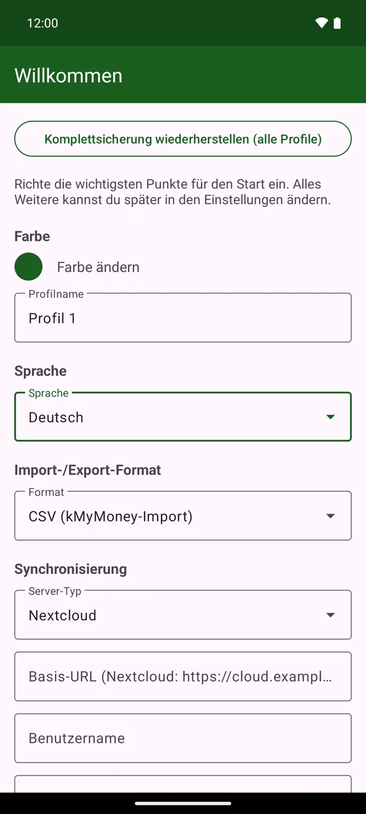
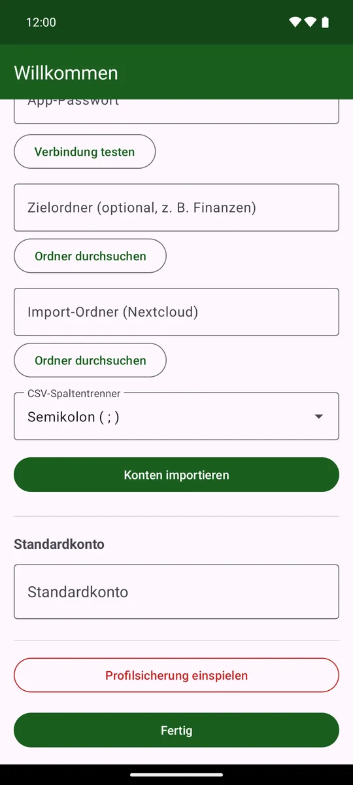
Wichtig – zuerst ein Konto: Legen Sie mindestens ein Konto an – im Assistenten über «Konten importieren» oder später in der Kontenschublade (☰ oben links) über «Konto hinzufügen». Das Standardkonto und die davon abhängigen Optionen (z. B. die Orte je Konto) lassen sich erst festlegen, wenn bereits Konten vorhanden sind.
Alle Einstellungen im Detail – Sprache, Zahlenformat, Währung, Server-Verbindung, Export-Modus, Standardkonto, Alias-Namen, App-Sperre, Sicherung u. v. m. – erklärt das Kapitel «Einstellungen» am Ende des Handbuchs (Kapitel 19). Erreichbar sind sie jederzeit über das Menü ⋮ oben rechts, Eintrag «Einstellungen» ganz unten.
4. Der Hauptbildschirm
Der Hauptbildschirm zeigt oben die grüne Titelleiste, darunter die Saldenzeile und dann die Liste der Buchungen. Unten rechts liegen die Aktionsknöpfe.
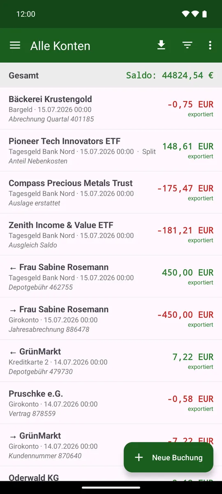
Saldenzeile (antippen zum Durchschalten)
Die farbige Zeile unter der Titelleiste zeigt einen Saldo. Durch Antippen schalten Sie der Reihe nach durch:
- Konto: Saldo des gerade gewählten Kontos (nur wenn ein einzelnes Konto gewählt ist).
- Gesamt: Summe aller Konten.
- Gesamtvermögen: alle Konten + aktueller Depotwert (nur wenn ein Depot importiert wurde).
- Orte: Salden der einzelnen Bargeld-Orte des Kontos.
- Gefiltert: Summe der aktuell gefilterten Buchungen (nur bei aktivem Filter).
Grüner Betrag = positiv/Guthaben, roter Betrag = negativ.
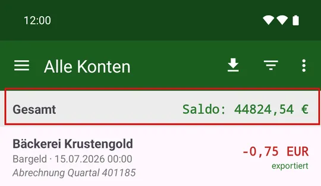
Homescreen-Widget
Für den Startbildschirm gibt es vier Widgets. Alle zeigen den Saldo des Standardorts (Standardkonto → Standardort), und ein Tippen auf den Saldo öffnet die App.
- klein (2×1): nur der Saldo.
- mittel (4×2): Saldo und drei Schnellaktionen – Buchung, Sprache, Betrag.
- groß (4×4): Saldo-Kopf mit Aktualisieren, die letzten Buchungen und die Aktionsleiste.
- Typ (4×2): wie auf der Uhr – drei farbige Symbol-Knöpfe für Einnahme, Umbuchung und Ausgabe, dazu ein grauer Wechsel-Knopf, darunter der Saldo.
Was die Knöpfe tun
Beim mittleren und großen Widget starten die Knöpfe «Neue Buchung», die Spracheingabe, die Betrag-only-Erfassung oder die Bestände – jeweils in der App.
Das Typ-Widget geht einen Schritt weiter: ein Typ-Knopf startet sofort die Spracherkennung und legt die Buchung direkt an, ohne die App zu öffnen (nur der System-Sprachdialog erscheint). Der graue Wechsel-Knopf schaltet das gewählte Konto beziehungsweise dessen Orte durch; Saldo und Ziel der nächsten Buchung folgen dieser Auswahl.
Aktualisiert wird beim Öffnen der App und in regelmäßigen Abständen.

5. Symbol- und Bedienelement-Referenz
Diese Übersicht erklärt jedes Symbol der App und was es tut.
| Symbol | Name | Bedeutung / Funktion |
|---|---|---|
| ☰ | Menü / Kontenschublade | Oben links. Öffnet die seitliche Schublade mit allen Konten, Depots und «Konto hinzufügen». |
| ← | Zurück | Oben links in Unterseiten. Kehrt zum vorherigen Bildschirm zurück. |
| ⬇ | Export / Synchronisieren | Titelleisten-Symbol (Pfeil nach unten, Download-Stil). Startet den Abgleich: schreibt neue Buchungen in die .kmy bzw. lädt sie zum Sync-Ziel. |
| ▽ | Filter | Trichter-Symbol. Öffnet den Filter nach Empfänger, Kategorie und Betrag. |
| ▮▮ | Auswertung | Balkendiagramm-Symbol. Öffnet die grafische Auswertung. |
| ⋮ | Weitere Menüpunkte | Drei Punkte (Überlauf). Enthält «Kategorien», «Bestände», «Budget», «Geplante Buchungen» und – ganz unten – «Einstellungen». |
| ✚ | Neue Buchung | Runder Knopf unten rechts. Kurz tippen: neue Buchung erfassen. Langer Druck: Spracheingabe. |
| ⊞ | Stille Betragserfassung | Ziffernblock-Symbol (nur bei eingeschaltetem Standort). Nur den Betrag eintippen; der Empfänger wird über den Standort ermittelt. |
| ↑ | Nach oben | Kleiner Pfeil. Springt an den Anfang der Buchungsliste. |
| ★ | Bevorzugter Alias | Markiert in der Alias-Liste einen bevorzugten Alias (wird vor Buchungen berücksichtigt). |
| → | Alias-Zuordnung | In der Alias-Liste: «gesprochener Begriff → richtiger Empfänger». |
| → / ← | Umbuchung | In der Buchungsliste: → ausgehende, ← eingehende Umbuchung (zeigt Gegenkonto/Empfänger). |
| Split | Splitbuchung | Kennzeichnet eine Buchung, die auf mehrere Kategorien aufgeteilt ist. |
| exportiert | Exportiert | Kleiner grüner Hinweis: diese Buchung wurde bereits exportiert. |
| ● rot/grün | Betragsfarbe | Roter Betrag = Ausgabe/negativ, grüner Betrag = Einnahme/positiv. |
Hinweis: Die Symbole in der Titelleiste stammen aus dem Material-Design-Satz; oben ist ihre Bedeutung beschrieben. Je nach Platz erscheinen manche Punkte im «⋮»-Überlaufmenü.
6. Konten und die Kontenschublade
Die Kontenschublade ist die Liste Ihrer Konten. ☰ oben links öffnet sie; ein Tipp auf ein Konto zeigt dessen Buchungen, ein langer Druck holt es frisch aus KMyMoney. Mehr braucht man im Alltag nicht. Der Rest dieses Kapitels erklärt, wie Sie Konten gruppieren, suchen und sortieren.
- Öffnen über das ☰-Symbol oben links oder durch Wischen vom linken Rand.
- «Alle Konten» zeigt alle Buchungen zusammen; ein einzelnes Konto filtert die Liste darauf.
- Langer Druck auf ein Konto: dieses Konto aus der .kmy importieren/aktualisieren.
- Langer Druck auf «Alle Konten» – oder in dieser Ansicht nach unten ziehen: liest alles neu ein (Konten, Depots und geplante Buchungen) in einem Durchgang.
- Depots stehen unten unter der Überschrift «Depots» und verhalten sich wie Konten: kurzer Tipp öffnet die Depot-Ansicht (das gewählte Depot bleibt markiert), langer Tipp aktualisiert das Depot.
- «Konto hinzufügen» (unten): lädt die .kmy und bietet die enthaltenen Konten zur Auswahl.
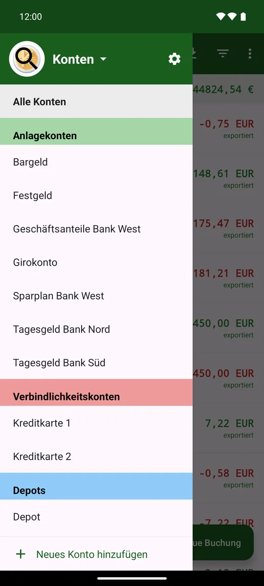
Kontengruppen
Neben der Kontenart (Anlage, Verbindlichkeit, Depot) gibt es Kontengruppen zur eigenen Ordnung – etwa «Favoriten», «Gemeinsam» oder «Sparen». Ein Konto kann in beliebig vielen Gruppen stehen; die Gliederung nach Kontenart bleibt davon unberührt.
Eine Gruppe wählen
Ein Tipp auf die Überschrift «Konten» klappt die Gruppen als Liste darunter auf; die gerade gültige trägt ein Häkchen. Danach stehen in der Schublade nur noch deren Konten, und die oberste Zeile trägt statt «Alle Konten» den Gruppennamen.
Die Wahl gilt app-weit: Buchungsliste, Saldoleiste und Bestände richten sich danach. In der Saldoleiste kommt die Gruppe als zusätzliche erste Seite hinzu; «Gesamt» meint weiterhin alle Konten.
Woher die Gruppen kommen
Jede Zeile trägt das Zeichen ihrer Herkunft: Ordner für selbst angelegte Gruppen, Bankgebäude für die aus dem Institutsblock der .kmy (z. B. «Volksbank»), Stern für die «Favoriten». Die beiden letzten spiegeln nur die Datei – geschrieben werden sie allein vom Import, von Hand sind sie nicht änderbar.
Die «Favoriten» entstehen aus den Konten, die in KMyMoney als bevorzugt gekennzeichnet sind (dort im Kontodialog unter «Bevorzugtes Konto»). Sie stehen in der Auswahl ganz oben, werden bei jedem Import neu gesetzt, und ihr Name folgt der Sprache der App.
Wenn eine Gruppe verschwindet
Nimmt man das letzte Konto aus einer Gruppe heraus (oder löscht es), verschwindet sie kommentarlos – leere Gruppen gibt es nicht. Das ist zugleich der Weg, eine Gruppe wieder loszuwerden. Ist kein Konto mehr bevorzugt, verschwinden ebenso die «Favoriten».
Gruppen, in denen nur noch geschlossene Konten stehen, tauchen in dieser Auswahl nicht mehr auf. Im «⋮»-Menü eines Kontos bleiben sie wählbar, damit man sie wiederbeleben kann.
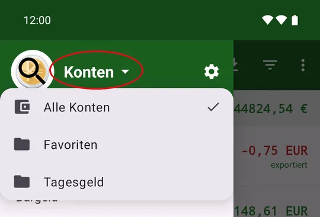
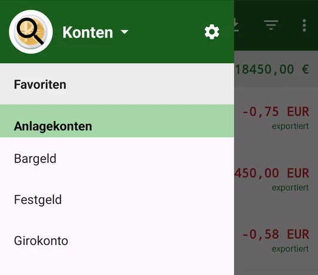
Konten suchen
Auf dem kMyMoney-Zeichen im Kopf der Schublade liegt eine Lupe. Ein Tipp darauf öffnet die Tastatur, und die Eingabe tritt für die Dauer der Suche an die Stelle der Überschrift «Konten». Getippte Zeichen filtern die Kontenliste sofort nach Namensteilen – «Kasse» findet also auch «Sparkasse» und «Barkasse».
Schließt man die Tastatur, tritt die Überschrift wieder an ihren Platz – der Begriff wirkt aber weiter, die Liste zeigt also nach wie vor nur die Treffer. Daran, daß die Lupe jetzt einen kleinen Kreuzstrich trägt, ist zu erkennen, daß gefiltert wird; ein Tipp darauf hebt die Suche auf.
Die Suche bleibt innerhalb der gewählten Kontengruppe und wird nirgends gespeichert. Sie endet außerdem von selbst, sobald man ein Konto auswählt, die Schublade zuschiebt oder die App verläßt.
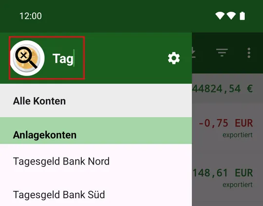
Konten sortieren und verwalten
Das Zahnrad rechts neben «Konten» öffnet eine eigene Ansicht. Sie zeigt – anders als die Schublade – auch geschlossene Konten, diese in grauer Schrift, jeweils mit dem Saldo rechts.
Reihenfolge ändern
Ziehen am Griff sortiert Konten innerhalb ihrer Kontenart. Die Reihenfolge gilt überall, wo Konten aufgelistet werden – auch in den Auswahllisten beim Buchen. Zieht man eine ganze Kontenart, klappen ihre Konten für die Dauer des Ziehens ein und es steht nur noch die Anzahl darunter; so wandert auch ein großer Block mit wenigen Bewegungen an seinen Platz.
Ein Konto einer Gruppe zuordnen
Das «⋮» an einer Kontozeile öffnet Ihre eigenen Kontengruppen als Ankreuzliste. Der Haken sagt, ob das Konto in der Gruppe steht; man setzt und nimmt beliebig viele auf einmal, geschrieben wird erst mit «OK». Ganz oben steht ein freies Feld für eine neue Gruppe – wer dort etwas eintippt, bekommt den Haken von selbst gesetzt.
Konto schließen und wiedereröffnen
Dieselbe Ankreuzliste trägt neben «OK» die Schaltfläche «Konto schließen» bzw. «Konto wiedereröffnen»; sie übernimmt die gesetzten Haken mit. Geschlossen wird nur bei Saldo 0. Bekommt ein geschlossenes Konto durch einen Import wieder einen Saldo, öffnet es sich von selbst.
Sonderfall: Gruppen aus der .kmy
Banken und Favoriten stehen nicht in der Ankreuzliste. Trägt man ihren Namen in das freie Feld ein, bleibt der Dialog mit einem Hinweis stehen und es wird nichts übernommen – eine Zuordnung von Hand wäre beim nächsten Import ohnehin wieder fort.

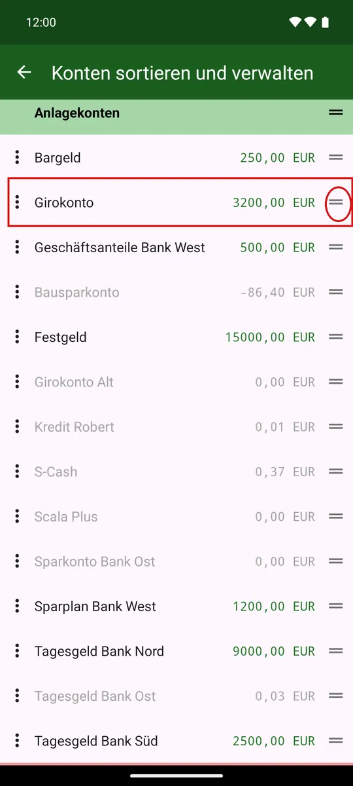
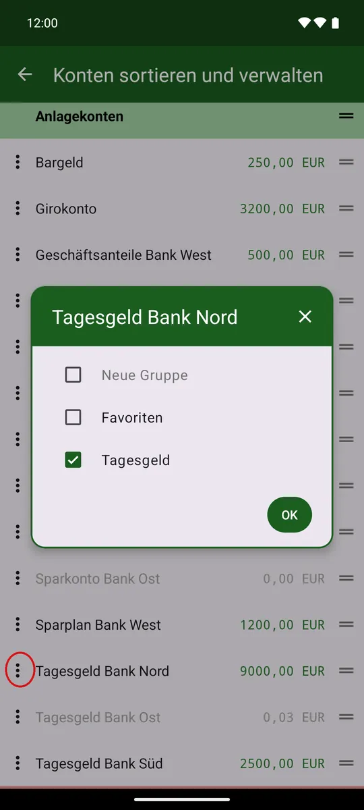
7. Mehrere Profile
Ein Profil ist ein eigener, vollständig getrennter Datenbestand: eigene Konten und Buchungen, eigene Server-Verbindung, eigene Währung, eigenes Zahlenformat und eigene Akzentfarbe. Praktisch etwa für privat und geschäftlich getrennt, oder wenn mehrere Personen dasselbe Gerät nutzen. Der Willkommen-Assistent legt beim ersten Start automatisch das erste Profil an; weitere kommen über die Einstellungen dazu. Es ist immer nur ein Profil aktiv.
Profil wechseln
- Menü ⋮ → Profil wechseln öffnet die Liste aller Profile; das aktive trägt den Zusatz «(aktiv)».
- Ein Tipp auf ein anderes Profil wechselt sofort dorthin, ohne dass die App neu startet.
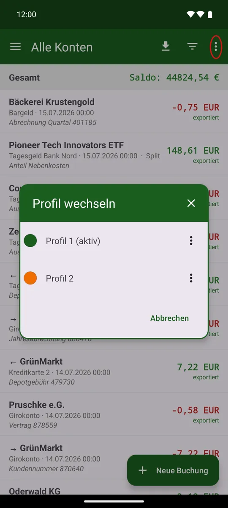
Neues Profil anlegen
In den Einstellungen legt «Neues Profil anlegen» ein weiteres Profil an – derselbe kurze Assistent wie beim allerersten Start (Kapitel 3): Sprache, Server, fertig. Das neue Profil wird sofort aktiv.
Ein Profil bearbeiten
Ein langer Druck auf eine Zeile in «Profil wechseln» – oder deren ⋮-Menü, Eintrag «Profil ändern» – öffnet die vollständige Einstellungsmaske dieses Profils: Währung, Zahlenformat, Dividenden, Budget, Orte, Alias-Namen, Konto löschen/schließen, Profil sichern und zurücksetzen. Ist das Profil noch nicht aktiv, wechselt die App vorher automatisch dorthin.
Umbenennen, Farbe ändern, Löschen
Dasselbe ⋮-Menü bietet außerdem «Umbenennen» und «Farbe ändern» (die Akzentfarbe von Buttons und Symbolleiste, nur für dieses Profil). «Löschen» entfernt das Profil samt Buchungen und Konten unwiderruflich – erst ab dem zweiten Profil verfügbar, eines muss immer bleiben.
Geräteweit statt je Profil gelten dagegen Sprache, Dunkelmodus, App-Sperre und die Erinnerung an fällige Buchungen – diese Einstellungen wirken für alle Profile gleich.
8. Eine Buchung erfassen
Tippen Sie auf den runden ✚-Knopf. Es öffnet sich der Buchungs-Editor. Eine gewöhnliche Ausgabe ist in vier Schritten erfaßt:
- Betrag eintippen.
- Empfänger wählen oder neu eintippen.
- Kategorie wählen – meist steht sie schon da.
- «Als neu speichern».
Konto, Datum und Ort sind bereits vorbelegt und brauchen nur Aufmerksamkeit, wenn etwas anderes gelten soll. Der Rest dieses Kapitels erklärt die Felder im einzelnen.
Ein Feld auswählen – überall gleich
Geldempfänger, Konto, Kategorie und Ort sind Anzeige, Auswahlliste und Suchfeld in einem – im Buchungs-Editor genauso wie beim Umbuchen, Ausgleichen, in den Filtern, im Alias-Editor, in den Einstellungen und in der Auswertung.
- Hineingehen: der bisherige Eintrag macht Platz und steht nur noch blass im Feld; die ganze Liste klappt auf.
- Tippen: die Liste wird laufend enger. Gesucht wird auch mitten im Wort und ohne Rücksicht auf Groß- und Kleinschreibung – «kasse» findet «Sparkasse».
- Zeichen löschen: die Liste wird wieder weiter. Ist das Feld ganz leer, steht wieder alles da.
- Eintrag antippen: er steht im Feld, und die Tastatur geht zu.
- Fertig-Taste (unten rechts auf der Tastatur): beendet die Eingabe und schließt die Tastatur, ohne dass Sie das Feld verlassen. Bleibt beim Tippen genau ein Treffer übrig, wird er übernommen – «visa u» genügt für «Visa Urlaub». Bei mehreren Treffern gilt dieselbe Regel wie beim Verlassen des Feldes.
- Verlassen ohne Auswahl: der alte Eintrag kommt zurück.
Ein neuer Geldempfänger darf dabei entstehen: tippen Sie einen Namen, den es noch nicht gibt, bleibt er stehen. Konto, Kategorie und Ort müssen dagegen aus der Liste stammen – ein erfundener Name wird beim Verlassen des Feldes wieder durch den alten ersetzt. Neue Konten kommen über den Import, neue Orte legt man in den Einstellungen an.
In den Kontenfeldern steht vorn, was Sie am ehesten brauchen: zuerst Ihre Favoriten (Stern), dahinter die Konten der gerade gewählten Kontengruppe (Symbol der Gruppe), dann alle übrigen mit dem Symbol ihrer Kontenart. Ihre eigene Kontenreihenfolge bleibt innerhalb jedes Blocks erhalten.
Was die App für Sie vorschlägt
Ist der Standort bekannt, stehen ganz oben in der Empfängerliste die paar nächstgelegenen Empfänger mit einem Peilpfeil – sobald Sie zu tippen beginnen, verschwindet dieser Vorschlag wieder.
Wählen Sie einen Empfänger, ergänzt die App die zuletzt dazu passende Kategorie gleich mit. Ändern Sie eine Kategoriezeile selbst, bleibt sie stehen und wird nicht mehr überschrieben.
Optional (in den Einstellungen einschaltbar unter «Betrag in den Vorschlägen berücksichtigen») schlägt sogar der eingetippte Betrag allein einen Empfänger in der Nähe vor, wenn er eindeutig zu einem passt.
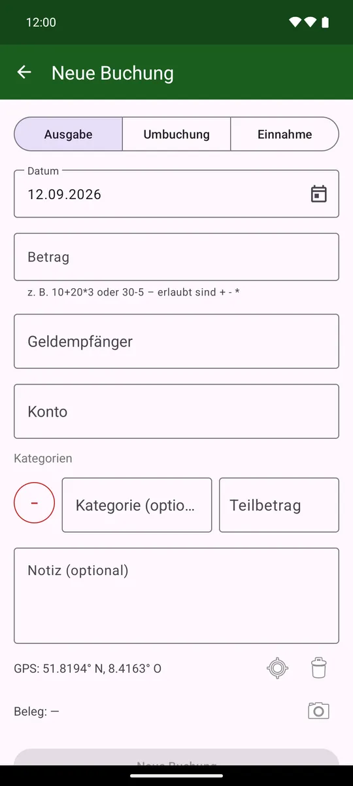
Rechnen im Betragsfeld
Das Betragsfeld nimmt statt der System-Tastatur eine kleine Rechnung entgegen (z. B. 10+20*3 oder 30-5) – praktisch zum Teilen einer Rechnung oder Verrechnen mehrerer Posten.
Felder und Bedienelemente
- Typ-Umschalter: Ausgabe · Umbuchung · Einnahme. Bestimmt die Art der Buchung.
- Betrag, Geldempfänger (freiwillig), Konto (Auswahl aus vorhandenen Konten).
- Datum: mit heute vorbelegt; der Knopf «Heute» setzt schnell das aktuelle Datum.
- Notiz: freier Text. Bei eingeschaltetem Standort steht hier automatisch «GPS: lat, lon».
- Ort (nur bei in der App angelegten Ausgaben/Einnahmen): welchem Bargeld-Ort die Buchung zugerechnet wird.
- «exportiert»-Schalter: markiert, ob die Buchung schon exportiert wurde.
Der Geldempfänger darf leer bleiben – wie in KMyMoney, wo er nie Pflicht war. Fehlt er, zeigen Buchungsliste, Widget, Budget und die Kategorie-Auswertung an seiner Stelle die Kategorie. Ist der Betrag auf mehrere Kategorien aufgeteilt, steht dort «Split-Buchung», denn sonst wäre nur die größte der Kategorien zu sehen und von der Aufteilung nichts. Fehlt auch die Kategorie, steht dort «*** NICHT ZUGEWIESEN ***» – derselbe Text, den KMyMoney in diesem Fall anzeigt. Er ist dort wie hier reine Anzeige und keine Kategorie, die es wirklich gäbe.
Speichern
- Als neu speichern: legt eine neue Buchung an.
- Aktualisieren: speichert Änderungen an einer bestehenden Buchung.
- Löschen: entfernt die Buchung.
Datum-Rückfrage beim Kopieren: Öffnen Sie eine bestehende Buchung, lassen das Datum unverändert und speichern sie «als neu», fragt die App, ob das alte Datum oder heute gelten soll.
Splitbuchung (mehrere Kategorien)
Im Abschnitt «Split-Kategorien» lassen sich mehrere Kategorien mit Teilbeträgen erfassen. Bei einer Kategorie sind Gesamt- und Kategoriebetrag gekoppelt; bei mehreren muss die Summe dem Gesamtbetrag entsprechen. Teilbeträge dürfen negativ sein.
Umbuchung
Wählen Sie den Typ «Umbuchung», dann Von- und Nach-Konto sowie optional einen Empfänger. Es entsteht eine verknüpfte Buchung in beiden Konten (in der Liste mit → bzw. ← markiert). Zusätzlich können Sie einen Von-Ort und einen Nach-Ort wählen; dann wird das jeweilige Ortsjournal mitgeführt (Von-Konto −Betrag, Nach-Konto +Betrag). Beide Felder sind mit dem Standardort des jeweiligen Kontos vorbelegt; mit «ohne Ort» bleibt das Journal dieser Seite unberührt. Bearbeiten oder Löschen der Umbuchung rollt die Ort-Bewegungen wieder zurück.
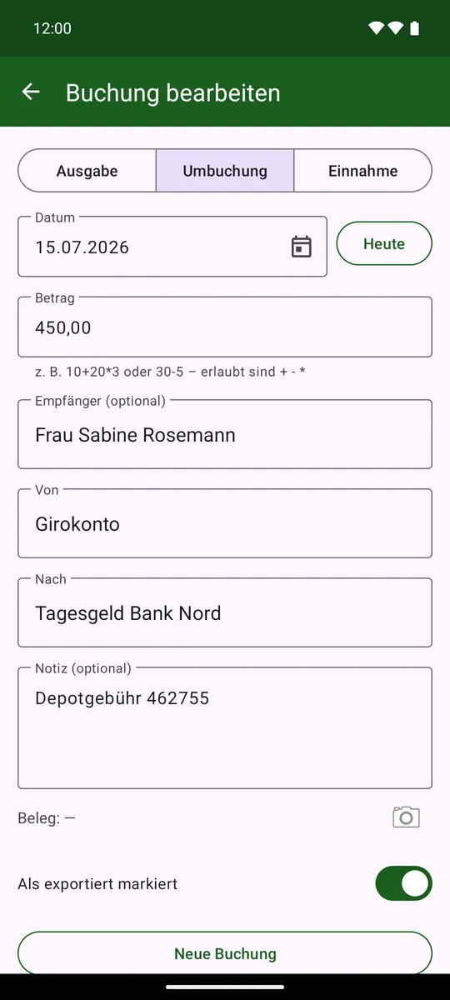
Stichwörter
KMyMoney kennt Stichwörter («Tags»): frei gepflegte Schlagworte wie «Urlaub» oder «Steuer», von denen eine Buchung beliebig viele tragen kann. Unterhalb des Notizfeldes steht dafür die Zeile «Stichwörter».
Das Stift-Symbol öffnet ein Fenster mit allen vergebenen Stichwörtern; ein Feld darunter fügt ein weiteres hinzu, das Papierkorb-Symbol räumt alle auf einen Griff weg. Eingeben lässt sich nur, was in KMyMoney bereits existiert.
Stichwörter gibt es bei Ausgaben, Einnahmen und Umbuchungen gleichermaßen. Kennt die App noch keine – etwa im CSV-Betrieb ohne KMyMoney-Datei –, erscheint die Zeile gar nicht.
9. Wertpapiere - Depot
Das Depot zeigt Ihre Wertpapiere aus KMyMoney und erlaubt die Erfassung von Käufen, Verkäufen und Dividenden – sowohl manuell als auch durch automatische PDF-Erkennung von Bank-Abrechnungen. Dieses Kapitel behandelt die Depot-Ansicht und deren Funktionen.
Wertpapier-Buchungen: Käufe, Verkäufe und Dividenden
Das Depot unterstützt die Erfassung von Käufen, Verkäufen und Dividenden von Wertpapieren – aber nur für Wertpapiere, die Sie bereits in KMyMoney angelegt haben. Die App erstellt keine neuen Wertpapiere.
Zwei Wege: Sie können eine Transaktion entweder manuell im Buchungs-Editor erfassen (Datum, Stückzahl, Kurs, Gebühren, Steuern) oder die App versucht, die Werte aus einer PDF-Abrechnung Ihrer Bank automatisch zu erkennen. Beim manuellen Erfassen geben Sie einfach wie gewohnt alle Felder ein und speichern.
Die Depot-Ansicht
Nach dem Import eines KMyMoney-Investmentkontos erscheint das Depot in der Kontenschublade. Die Ansicht ist wie eine Konto-Ansicht aufgebaut – gleiche Titelleiste, gleiche Schublade, gleicher Filter – und zeigt je Wertpapier Stückzahl × Kurs = aktueller Wert. Vollständig verkaufte Papiere werden ausgeblendet.
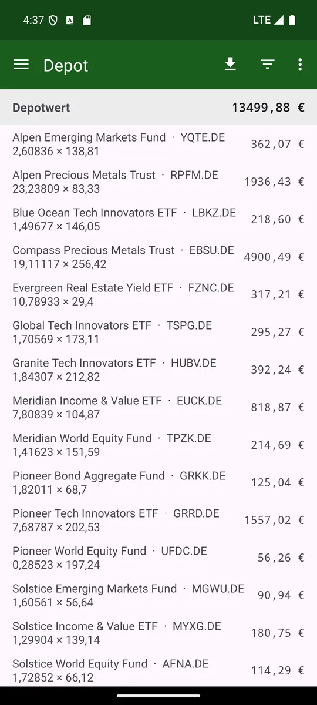
Die Saldenzeile schaltet per Tipp durch: Depotwert → Käufe → Verkäufe → Dividenden → Nettoeinsatz (Käufe − Verkäufe − Dividenden) → Gewinn/Verlust (farbig, mit Prozent). Verkäufe und Dividenden erscheinen nur, wenn es welche gibt. Der Depotwert wird getrennt geführt und steht zusätzlich als «Gesamtvermögen» in der Saldenzeile des Hauptbildschirms.
Ein Tipp auf ein Wertpapier öffnet seine Bewegungen im Vollbild – Käufe grün, Verkäufe rot, Dividenden neutral – mit denselben Kennzahlen für dieses Papier, einem Filter nach Käufen, Verkäufen und Dividenden sowie einem Datums-Regler, der beim ersten Kauf beginnt.
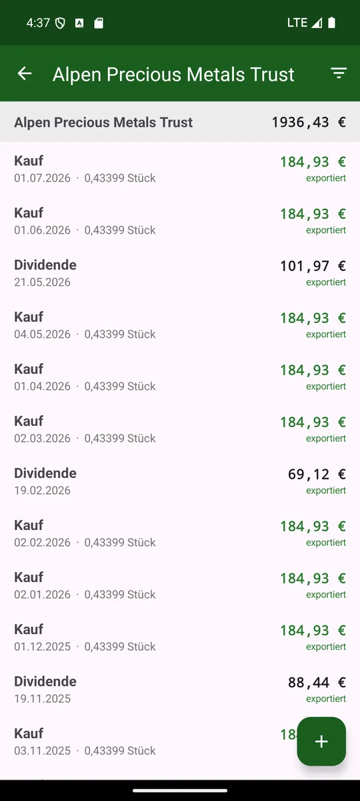
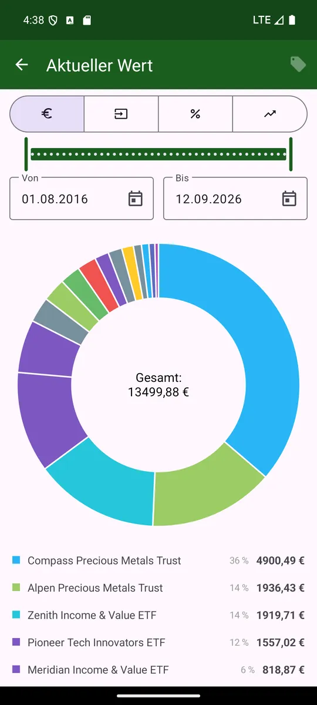
Positionen filtern
Der Trichter ▽ in der Depot-Symbolleiste filtert wie in der Buchungsliste: nach Namen, nach Wert – und zusätzlich, ob aktive Bestände und/oder geschlossene Positionen (Stückzahl null) angezeigt werden. Voreinstellung: nur aktive.
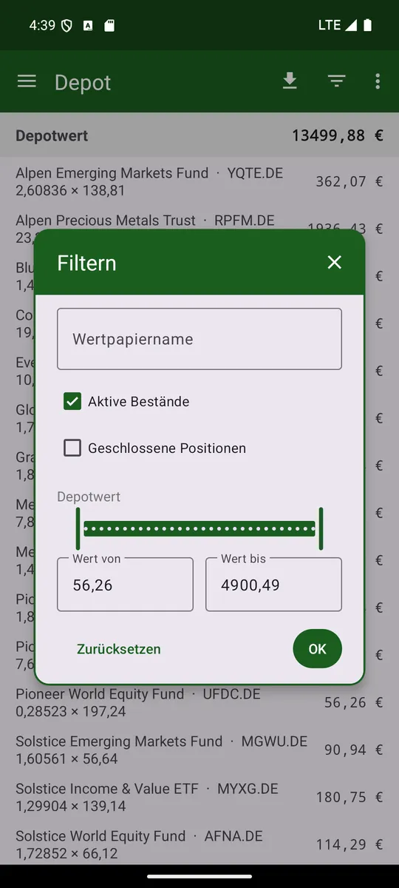
Eine Wertpapier-Buchung öffnen
Ein Wertpapierkauf erscheint auch in der Buchungsliste des Verrechnungskontos – als Umbuchung zwischen diesem Konto und dem Wertpapier. Öffnen Sie sie, sind Betrag, Empfänger, Konten und Datum gesperrt. Der Grund: Stückzahl und Kurs gehören zu dieser Buchung, stehen aber nur in der KMyMoney-Datei. Die App kennt sie nicht – dürfte sie die Buchung wie eine gewöhnliche Umbuchung zurückschreiben, wäre aus dem Wertpapierkauf in Ihrer Datei eine nackte Umbuchung geworden, und das Depot dort zerstört.
Ändern lassen sich dafür genau die drei Dinge, die KMyMoney bei einer solchen Buchung nicht selbst braucht: die Notiz, die Stichwörter und der Beleg – etwa die Abrechnung Ihrer Bank als PDF. Beim nächsten Export trägt die App sie in die vorhandene Transaktion nach, ohne sie neu zu bauen: Stückzahl, Kurs und Art der Bewegung bleiben unangetastet. So finden Sie die Abrechnung auch nach einem erneuten Einlesen des Depots wieder.
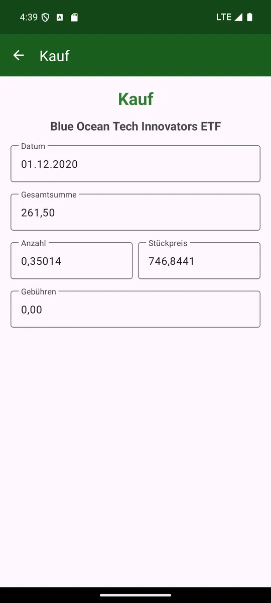
Löschen geht – anders als Ändern
«Löschen» gibt es hier sehr wohl, und es nimmt die zugehörige Depot-Bewegung mit; sonst bliebe im Depot eine Bewegung ohne Geldbuchung stehen. Anders als beim Ändern verschwindet dabei die ganze Transaktion auf einmal, nichts bleibt halb stehen.
Steht die Buchung bereits in der KMyMoney-Datei, wird sie beim nächsten Export auch dort entfernt. Rückgängig gibt es nicht.
Ein kurzer Tipp auf eine Bewegung zeigt die Zahlen dahinter: bei Kauf und Verkauf Anzahl Stücke, Stückpreis, Betrag, Gebühren und den daraus folgenden Gesamtbetrag (Belastung beim Kauf, Gutschrift beim Verkauf); bei Dividenden die Stückzahl im Bestand, die Bruttodividende pro Stück, den Bruttobetrag, Steuern/Abgaben und den Nettobetrag; bei Ein- und Ausbuchungen die Stückzahl. Die Gebühren stehen erst nach einem erneuten Depot-Import zur Verfügung – vorher bleibt die Zeile weg.
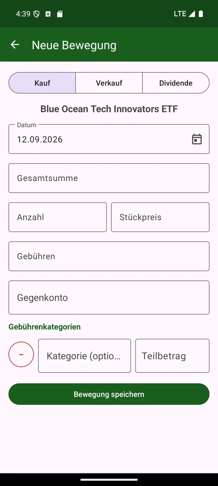
Bei Einbuchungen und Ausbuchungen kennt KMyMoney nur die Stückzahl, keinen Geldwert. Ein langer Klick auf eine solche Zeile öffnet einen Dialog, um den Wert manuell einzutragen (über dieselbe Rechentastatur wie sonst im Betragsfeld) – er zählt danach wie ein Kauf bzw. Verkauf zum Einstandspreis und Gewinn/Verlust und übersteht auch einen erneuten Depot-Import.
Auswertung (Kreisdiagramm)
Das Menü «Auswertung» öffnet ein Kreisdiagramm der Wertpapiere, im Design der Kategorien-Seite. Ein Tipp auf ein Segment zeigt Name und Betrag des Papiers.
Oben wählt ein Symbol-Umschalter die Ansicht: Aktueller Wert, Netto-Einzahlungen, Summe Dividenden oder Gewinn/Verlust. Darunter grenzt ein Zeitraumfilter die Auswertung ein.
Ein Symbol im Menüstreifen blendet komplett verkaufte Wertpapiere ein oder aus (Standard: ausgeblendet).
PDF-Abrechnungen automatisch einlesen
Die Depot-Ansicht kann Wertpapierabrechnungen als PDF einlesen und daraus Transaktionen automatisch vorbereiten. Beim ersten Mal prüfen und bestätigen Sie die Werte manuell – die App lernt dabei die Regeln für diese Bank. Anschließend lädt die App die Werte bei nachfolgenden Abrechnungen dieser Bank automatisch vor. Wie das Lernen der Erkennungsregeln im Detail funktioniert und wie Sie es anpassen, steht im nächsten Kapitel.
10. Erkennungsregeln für PDF-Abrechnungen: Lernen und Verwalten
Die PDF-Erkennungsfunktion (aktivierbar unter Abrechnungen einlesen) arbeitet nach einem simplen Prinzip: Sie zeigen der App beim ersten Mal, wo die Werte stehen, und die App merkt sich die Regel für alle nachfolgenden Abrechnungen derselben Bank – bis zur Änderung durch Sie.
Die erste Abrechnung einer Bank: Sie laden ein PDF herunter, öffnen das Depot und tippen «PDF einlesen». Die App versucht, die Werte (Datum, Stückzahl, Kurs, Gebühren, Steuern etc.) automatisch zu erkennen. Das Ergebnis zeigt sie zur Prüfung vor – genau wie eine manuelle Erfassung. Jeder Wert, den Sie eingeben oder korrigieren, wird dabei gelernt: Die App notiert sich, wo in diesem PDF die Werte standen (welche Beschriftung, in welcher Zeile) und wie Sie die Werte genannt haben (welche Kategorie, welche Beschriftung bei der Bank). Nach Ihrer Bestätigung («Merken») wendet die App die Regeln sofort auf das gleiche PDF an – als Probe. Passt das Ergebnis, speichert sie die Regeln und Sie können buchen. Passt es nicht, öffnet sie gleich die Regelseite, wo Sie die gerade gelernten Regeln sehen und korrigieren können.
Nachfolgende Abrechnungen: Beim nächsten PDF derselben Bank lädt die App alle Werte automatisch vor – Sie müssen nur noch prüfen und können direkt buchen. Sollte sich das Format der Bank ändern (neue Spalten, andere Beschriftungen), prüfen Sie die Werte und bestätigen mit «Merken» – die App passt die Regeln automatisch an.
Erkennungsregeln anpassen: Sollte eine gelernte Regel nicht mehr passen oder Sie möchten sie manuell korrigieren, öffnen Sie das Depot und tippen ⋮ → Erkennungsregeln. Dort sehen Sie alle bisher gelernten Regeln nach Bank sortiert. Ein Tipp auf eine Bank zeigt ihre Regeln: zu jedem Feld (Datum, Betrag, Gebühren etc.) steht die gelernte Beschriftung (wie die Bank die Zeile nennt), die Position (welche Zeile, welche Spalte), ob es eine feste Gebühr je Order gibt und weitere Details. Sie können jede Regel einzeln löschen, damit die App sie beim nächsten PDF dieser Bank neu lernt – oder Sie bearbeiten die Regel und passen die Beschriftung, Position und Optionen manuell an.
Regeln teilen und einspielen: Was Ihre App über eine Bank gelernt hat, lässt sich weitergeben: ⋮ → Regeln teilen auf der Regelseite schickt die Regeln dieses Depots als kleine JSON-Datei – per Mail, Messenger oder in die Dateien-App. Darin stehen nur die Beschriftungen und Leseregeln, keine Beträge und keine Wertpapiere. Umgekehrt übernimmt ⋮ → Regeln einspielen eine solche Datei ins geöffnete Depot und ersetzt dabei dessen bisherige Regeln – eine Rückfrage nennt vorher, was in der Datei steht. So bekommen Sie die Regeln für Ihre Bank von jemandem, der dieselbe hat, ohne selbst eine einzige Beschriftung einzutippen. Und wird eine Ihrer Abrechnungen nicht erkannt, schicken Sie die Regel, an der es liegt, statt sie zu beschreiben.
Werte aus einer Tabelle auswählen
Tippen Sie in der Maske auf das Datumsfeld oder auf der Regelseite auf ein Beschriftungsfeld, legt die App die gefundenen Angaben zur Wahl vor – jede auf beiden Wegen, wo es beide gibt: über die Beschriftung daneben und über die Spaltenüberschrift darüber. Steht also «Wertstellung» als Überschrift über dem Datum und «zum» daneben, erscheinen beide Zeilen; hinter der Spaltenlesart steht, wie weit darunter gelesen wird. Was Sie antippen, wird genau so gemerkt – die App entscheidet nicht für Sie, welche Beschriftung die Bank im nächsten Beleg behält.
Werte in einer Tabelle
Manche Banken stellen die Zahlen nicht hinter eine Beschriftung, sondern unter eine Spaltenüberschrift. Die Datenzeile beginnt dann mit einer Zahl und trägt selbst gar keine Beschriftung. Für solche Belege heißt «in einer der Zeilen darunter»: die nächste Zeile, die überhaupt einen Wert trägt – bis zu drei Zeilen weit. Das überspringt eine zweite Kopfzeile, die manche Banken einschieben. Wenn diese Suche an einer Zwischenzeile hängenbleibt, die zufällig eine Zahl trägt, wählen Sie stattdessen «genau 1, 2 oder 3 Zeilen darunter».
Eine Tabellenzeile trägt oft mehrere Angaben derselben Art – vorn den Buchungstag, daneben die Wertstellung. Welche gemeint ist, sagt die Auswahl «Welche Zahl der Zeile»; sie gilt auch für Datumsangaben. Beim Datum bedeutet die Vorgabe «die letzte» aus Rücksicht auf ältere Regeln weiterhin die erste Angabe hinter der Beschriftung – wer eine andere will, wählt ausdrücklich «die erste (Tabellenspalte)» oder «die 2. von links».
In der Spalte der Beschriftung: Bei einer Tabelle hilft Abzählen nur, solange jede Spalte genau eine Zahl breit ist und keine fehlt. Steht die Beschriftung als Spaltenüberschrift, wählen Sie bei «Welche Zahl der Zeile» stattdessen «die Zahl in der Spalte der Beschriftung»: die App nimmt dann den Wert, der auf der Seite unter (bzw. über) der Beschriftung steht. Das hält auch, wenn in einem späteren Beleg eine Spalte fehlt. Die Auswahl gibt es nur zusammen mit «darunter» oder «darüber» – in derselben Zeile wäre die Spalte der Beschriftung die Beschriftung selbst.
Werte über der Beschriftung: Manche Belege setzen erst die Zahl und benennen sie darunter. Dafür gibt es «in einer der Zeilen darüber» und «genau 1, 2 oder 3 Zeilen darüber» – spiegelbildlich zu «darunter».
Hilfe beim Eintippen: Unter «Abrechnung prüfen» steht neben dem Ergebnis der Knopf «Text mit Zeilennummern». Er zeigt die Abrechnung so, wie die App sie liest. Das ist nötig, weil ihre Zeilen nicht die Zeilen des PDF-Betrachters sind: sie entstehen aus den Wortpositionen, und eine optisch leere Zeile gibt es dort gar nicht. Zum Abzählen des Abstands ist das die einzige verläßliche Quelle.
Mehrere Kategorien bei Gebühr und Ertrag
Genau wie im Buchungseditor läßt sich «Gebühren/Steuern» – bei einer Dividende auch der «Ertrag» – auf mehrere Kategorien aufteilen. In der Erfassungsmaske fügt der Knopf «+» unter der Zeile eine weitere Kategorie hinzu; die Summe aller Zeilen muß den Betrag darüber ergeben.
Auf der Regelseite steht derselbe Knopf: Jede Teilzeile bekommt eine eigene Erkennungsregel – Beschriftung, Richtung, Stelle, genau wie ein normales Feld. Sagen Sie beim Merken «Für diese Bank merken», legt die App für jede Kategoriezeile, deren Beschriftung sie im Beleg findet, automatisch eine solche Teilregel an.
Bleibt danach ein Rest übrig, der auf dem Beleg gar nicht steht – etwa eine Bankgebühr, die manche Institute nicht ausdrucken –, merkt sich die App nur diesen Rest als feste Gebühr, nicht die ganze Summe. Beim erneuten Einlesen erscheint er dann als eigene, letzte Kategoriezeile neben den erkannten.
Eine Gebühr, die nicht auf der Abrechnung steht
Manche Banken nehmen je Order einen festen Betrag, ohne ihn auf der Abrechnung auszuweisen. Eine Regel kann ihn nicht finden – sie sucht nach einer Beschriftung, und es gibt keine. Auf der Regelseite steht deshalb bei der Gebühr ein Feld «Feste Gebühr je Order» samt Kategorie.
Ob dieser Betrag zum Zuge kommt, entscheidet der Schalter «Mehrere Zeilen zusammenzählen» darüber. Findet die Regel im Beleg keine Gebühr, gilt der feste Wert. Findet sie eine und der Schalter steht an, kommt der feste Wert hinzu. Steht er aus, gewinnt die gefundene Gebühr und der feste Wert bleibt außen vor.
Beim Gesamtbetrag steht dazu der Schalter «Feste Gebühr steckt schon im Gesamtbetrag». Steht er aus, ist der abgebuchte Betrag um die Gebühr höher als die Zahl auf dem Beleg – beim Verkauf die Gutschrift um sie niedriger –, und die App rechnet das hinzu. Steht er an, bleibt der Gesamtbetrag, wie er dasteht.
Von selbst erkannt: Tragen Sie beim Erfassen einen Gesamtbetrag und eine Gebühr ein, die beide nicht in der Abrechnung stehen, probiert die App die Differenz – also den Betrag ohne die Gebühr. Findet sie den, lernt sie dessen Beschriftung und trägt die Gebühr gleich als feste Ordergebühr ein. Das ist der einzige Wert, den die App nicht abliest, sondern erschließt; die Rückfrage nennt ihn deshalb ausdrücklich mit Betrag.
Keine Garantie für jede Bank: Diese Erkennung arbeitet mit allgemeinen Regeln statt mit fest programmiertem Code für jedes einzelne Institut – eine vollständige, für jede Bank maßgeschneiderte Erkennung würde eigenen Code je Bank erfordern, wie es professionelle Bezahl-Apps mit einem entsprechenden Team leisten. Als Ein-Personen-Projekt kann diese App das nicht bieten. Bei ungewöhnlich aufgebauten Abrechnungen kann die Erkennung deshalb scheitern oder falsche Werte vorschlagen – prüfen Sie die vorgeschlagenen Werte daher immer, bevor Sie speichern.
11. Schnell erfassen: Sprache, Standort, Belege
Dieses Kapitel sammelt die Wege, auf denen eine Buchung mit wenigen Handgriffen entsteht: sie sprechen, nur den Betrag eintippen und den Empfänger vom Standort raten lassen, einen Beleg anhängen, und der App eine Zuordnung als Alias beibringen.
Spracheingabe
Langer Druck auf den ✚-Knopf öffnet die Spracheingabe. Sagen Sie z. B. «Frisör 20 €»: Die App sucht eine passende Vorlage (Empfänger, Konto, Kategorie, Buchungsart) und öffnet sie mit heutigem Datum und dem gesprochenen Betrag.
Nächstgelegener Empfänger
Gibt es mehrere gleichnamige Empfänger (z. B. «REWE Ort 1» und «REWE Ort 2») und ist der Standort bekannt, wählt die App den geografisch nächstgelegenen.
Nur den Betrag erfassen (Ziffernblock ⊞)
Bei eingeschaltetem Standort erscheint unten das Ziffernblock-Symbol. Tippen Sie nur einen Betrag ein: Die App sucht an Ihrem aktuellen Standort einen passenden Empfänger und zeigt ihn vor dem Speichern an.
Stehen an Ihrem Standort mehrere bekannte Empfänger (Tankstelle und Waschanlage), hilft der Betrag beim Erraten – während Sie tippen, wechselt der vorgeschlagene Name. Ein Tipp auf den Namen blättert zu den übrigen Kandidaten und zuletzt zu «ohne Empfänger». Voraussetzung ist der Schalter «Betrag in den Vorschlägen berücksichtigen» (ab Werk aus) – ohne ihn zählt allein die Entfernung.
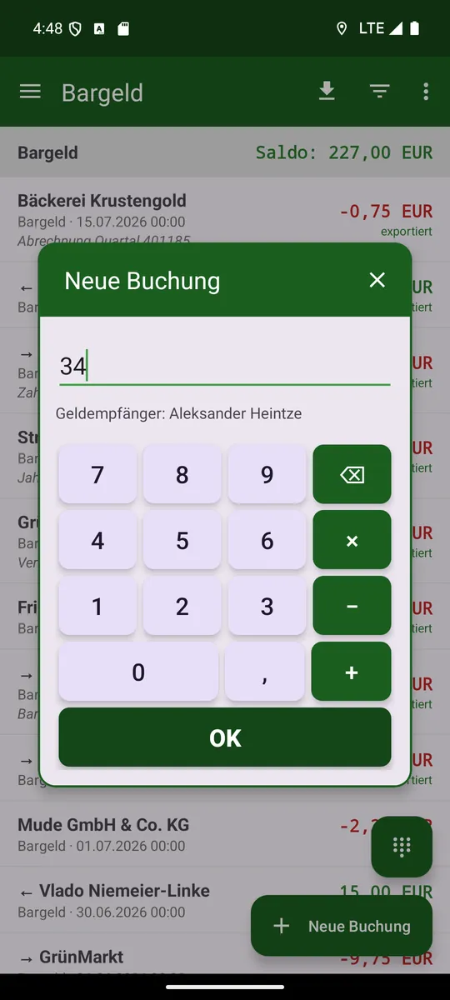
Belegfotos
Im Buchungseditor hängen Sie über den Knopf «Beleg» ein Foto (Kamera oder Galerie) oder ein PDF-Dokument an – bei Bedarf auch mehrere Seiten, etwa für einen langen Kassenbon. Das gilt für jede Buchungsart, auch für Umbuchungen.
Die Bilder werden privat gespeichert und im Hintergrund in den Ordner «Belege» Ihres Sync-Ordners hochgeladen; offline aufgenommene folgen beim nächsten Verbindungsaufbau nach. Der Verweis bleibt in der Notiz erhalten, die App findet das Foto also auch nach einem erneuten Import wieder.
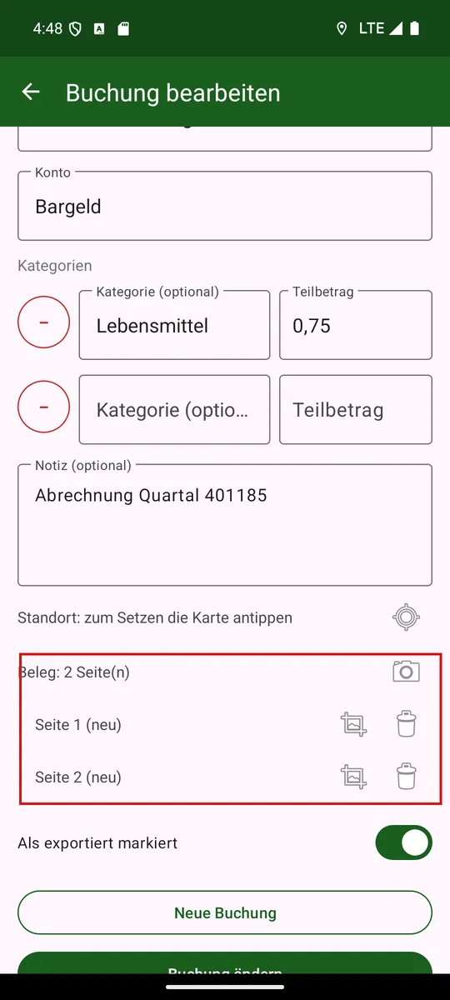
Ein eigener Betrachter zeigt die Seiten: Wischen blättert durch, Zusammenziehen/Aufziehen oder ein Doppeltipp vergrößern das Bild, um Kleingedrucktes zu lesen.
Löschen Sie eine Buchung, verschwinden ihre Belege erst beim nächsten App-Start – nicht sofort, damit «Rückgängig» sie noch mitbringt.

Belege eines Filters ausgeben
Im Menü (⋮) der Buchungsliste exportiert «Belege exportieren» alle Belege der gerade gefilterten Buchungen als ZIP-Datei mit sprechenden Dateinamen (Datum, Empfänger, Betrag) – praktisch etwa fürs Steuerbüro. Der Punkt erscheint nur, wenn ein Filter gesetzt ist, denn er bezieht sich auf genau diese Auswahl.
Belegfotos zuschneiden und begradigen
Direkt nach der Aufnahme fragt die App, ob Sie das Foto bearbeiten möchten. Mit «So übernehmen» bleibt es unverändert; später erreichen Sie die Bearbeitung jederzeit über das Zuschneide-Symbol in der Beleg-Zeile.
Ziehen Sie die vier Ecken auf die Rechnung: «Rechteck» schneidet gerade zu, «Trapez» begradigt eine schräg fotografierte Rechnung. Zwei Regler stellen Helligkeit und Kontrast ein, nützlich bei blassen Kassenzetteln.
Das unbearbeitete Original bleibt dabei immer erhalten – Sie können jederzeit wieder damit von vorn beginnen.

Alias-Namen (gelernte Zuordnungen)
Ändern Sie beim Speichern den erkannten Empfänger, bietet die App an, sich die Zuordnung als Alias zu merken – samt Konto, Kategorie und Ort. So wird «Mama 100 €» künftig automatisch auf den richtigen Namen mit passendem Konto gebucht.
Ein Alias kann mehrere Standorte führen (z. B. mehrere Filialen) sowie einen Bereich «Übliche Beträge», der beim Erraten hilft, wenn mehrere Empfänger am selben Ort liegen. Auch Stichwörter merkt sich ein Alias: sie stehen bei der nächsten Buchung für diesen Empfänger automatisch bereit.
Verwalten – anlegen, ändern, löschen – lassen sich Aliase jederzeit unter Einstellungen → Alias-Namen.
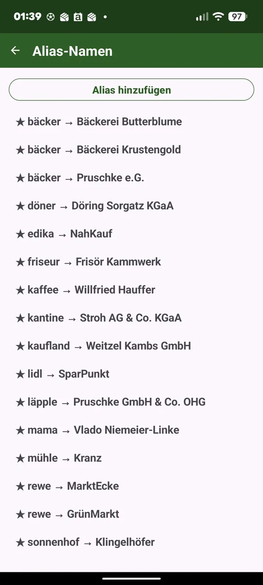
12. Buchungsliste und Filter
- Kurzer Druck auf eine Buchung öffnet sie als reine Ansicht: eine große farbige Überschrift zeigt die Art (Einnahme = grün, Umbuchung = gelb, Ausgabe = rot), unten stehen der Kontostand vor und nach der Buchung.
- Langer Druck öffnet sie zum Bearbeiten.
- Herunterziehen liest in der kmy-Variante die Datei neu ein und aktualisiert genau dieses Konto oder Depot. In der CSV-Variante geht das über die Kontenschublade (langer Druck auf das Konto).
- Markierungen an einer Zeile: «Split», → / ← für eine Umbuchung, «exportiert»; die Farben rot und grün stehen für Ausgabe und Einnahme.
- Die Notiz wird in der Liste auf zwei Zeilen gekürzt; im Editor umfaßt das Feld vier.
- Rückgängig: Nach dem Löschen einer Buchung erscheint unten kurz «Rückgängig» – ein Tipp legt sie wieder an. Im Ort-Journal bleiben Löschung und Wiederanlage als Bewegungen sichtbar. Bei Umbuchungen gibt es kein Rückgängig.
- Langdruck auf das App-Symbol (Startbildschirm): «Neue Buchung» öffnet den Editor direkt.

Schnellsuche (Kontoname antippen)
Schnell suchen: Tippen Sie oben auf den Kontonamen – er macht dann einem Suchfeld Platz. Was Sie tippen, engt die Liste sofort ein; gesucht wird in Empfänger, Notiz und Kategorie zugleich, mitten im Wort und ohne Rücksicht auf Groß- und Kleinschreibung. Die Lupe auf der Tastatur klappt das Feld wieder ein: Der Kontoname steht zurück an seinem Platz, die Suche bleibt aber aktiv. Ein weiterer Tipp auf den Namen holt sie zum Nachbessern zurück – Ihr Suchwort steht dann noch darin.
Alles wieder zeigen: Sobald etwas gefiltert ist, steht unter dem Kontonamen die Zeile «Filter aktiv (23)» mit einem ✕ davor. Es räumt in zwei Schritten: Der erste Tipp nimmt die Schnellsuche weg – die Zeile bleibt stehen und zeigt nun, was der Trichter allein übrig läßt. Der zweite Tipp räumt auch den, danach ist die Zeile verschwunden und die Liste wieder vollständig. So verlieren Sie beim Beenden einer Suche nicht den Zeitraum oder Betragsbereich, den Sie sich vorher eingestellt haben. Ist nur eines von beidem aktiv, genügt selbstverständlich ein Tipp.
Der Filter (Trichter ▽)
Der Trichter in der Titelleiste grenzt die Liste ein. Ganz oben steht ein Suchfeld, das Empfänger, Notiz und Kategorie zugleich durchsucht – mitten im Wort und ohne Rücksicht auf Groß- und Kleinschreibung. So finden Sie eine Buchung auch über ihre Notiz. Darunter folgen Kategorie (als Baum), Stichwort, Betrag und Datum von–bis. Die Lupe auf der Tastatur übernimmt den Filter sofort – der Knopf «Übernehmen» steht am Ende dieses langen Dialogs und damit unter der Tastatur. Wer statt dessen noch Betrag oder Zeitraum einstellen will, schiebt einfach weiter: dabei geht die Tastatur von selbst weg. Die Schnellsuche oben und dieser Filter gelten zusammen: Wer hier etwas einstellt und dann oben tippt, sucht innerhalb des bereits Gefilterten weiter. «Zurücksetzen» räumt beides.
Der Filter wirkt auf Liste und Auswertung. Ist er gesetzt, steht im Menü ⋮ zusätzlich «Belege exportieren», das die Belege genau dieser Auswahl als ZIP-Datei ausgibt.
Betrag und Zeitraum
Beim Betrag zählen Ausgaben negativ und Einnahmen positiv; der Regler läuft von der größten Ausgabe links bis zur größten Einnahme rechts, ein feiner Strich zeigt die Null dazwischen. Er bewegt sich in Anteilen, nicht in Beträgen: der rechte Daumen bei 90 % schneidet das größte Zehntel ab – ein einzelner Ausreißer zieht den Regler also nicht mehr auf. Eine genaue Grenze tippen Sie direkt ins Feld.
Das Datum läuft als Schieberegler in Monatsschritten; ein taggenaues Datum geben Sie direkt im Feld ein.
Umkreis (nur mit Standort)
Ganz unten steht – nur bei eingeschaltetem Standort (GPS) – der Knopf Umkreis. Jeder Tipp schaltet weiter über «aus», 100 m, 500 m, 1 km, 10 km und wieder «aus». Auf einer Stufe bleiben nur Buchungen stehen, die in diesem Umkreis um Ihren jetzigen Standort entstanden sind.
Woher der Ort einer Buchung kommt: aus den Koordinaten in ihrer Notiz, und wo die fehlen, aus dem gelernten Standort des Empfängers im Alias. Ihre eigene Position wird beim Anwenden einmal festgehalten – die Liste wandert also nicht mit, wenn Sie weitergehen.
Ist noch keine Position bekannt, bleibt die Liste leer und die Titelzeile zeigt «Filter aktiv (0)». «Zurücksetzen» stellt «Umkreis aus» her; danach spielt der Standort keine Rolle mehr. Anders als die übrigen Kriterien wirkt der Umkreis nur auf die Liste, nicht auf die Auswertung.
Sonderfälle
Das Stichwort gibt es nur, wenn die App Stichwörter aus der KMyMoney-Datei kennt; «Alle» hebt die Wahl wieder auf. Und ist nach Kategorie gefiltert, zeigt eine Splitbuchung nur den Teilbetrag dieser Kategorie.
13. Auswertung
- Zeiträume: Tag / Woche / Monat / Jahr.
- Sichten: einzelnes Konto, Ort oder Gesamt.
- Ist in der Schublade eine Kontengruppe gewählt, steht sie hinter «Gesamt» und «Gesamt ohne Depot» als eigene Sicht: nur die Konten der Gruppe, deren Depots eingerechnet – dieselbe Summe wie in der Saldo-Leiste der Hauptseite.
- Zoomen per Fingergeste: waagerecht = Anzahl der Balken, senkrecht = Y-Achse.
- Geschlossene Konten zählen nur in der Gesamtsicht (historischer Saldo).
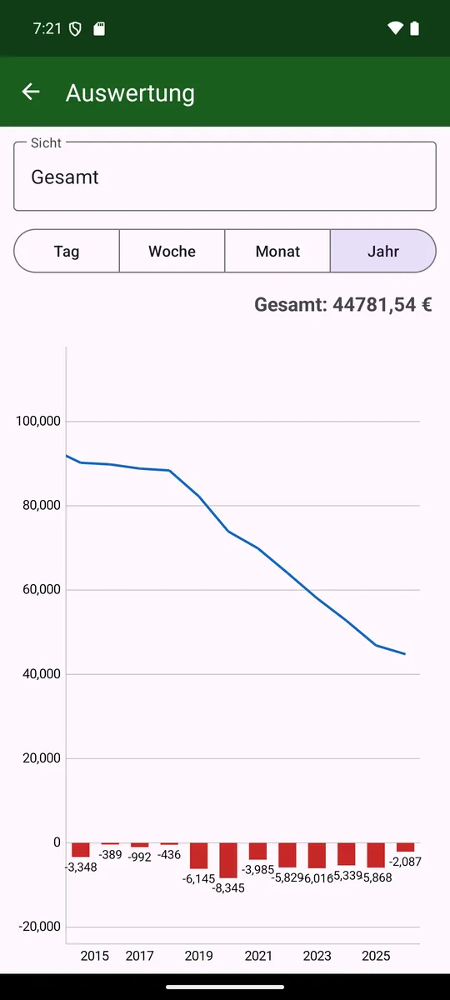
14. Wofür geht mein Geld?
Die Seite Kategorien (Menü ⋮ → Kategorien) zeigt die Ausgaben je Kategorie – als Kreisdiagramm und darunter als Liste, absteigend nach Betrag. Sie ergänzt die Auswertung (Kapitel 13), die nur den zeitlichen Verlauf je Konto/Ort zeigt.
- Umschalter Monat/Jahr: laufender Monat bzw. laufendes Jahr.
- In beiden Sichten blättern Sie – wie im Budget – per Wischgeste durch die Zeiträume (nach rechts = zurück, nach links = vor); die Kopfzeile zeigt mittig fett den angezeigten Monat bzw. das Jahr, links und rechts grau den vorigen bzw. nächsten (Tippen blättert ebenfalls). Vor den ersten Buchungszeitraum und hinter den aktuellen wird nicht geblättert.
- Das Diagramm nutzt die volle Breite und höchstens die halbe Bildschirmhöhe; die Liste darunter scrollt für sich, das Diagramm bleibt dabei sichtbar.
- Die Segmente sind unbeschriftet; ein Tipp zeigt in der Mitte Kategorie und Betrag, ohne Auswahl steht dort die Gesamtsumme. Die Liste nennt zusätzlich den Anteil in Prozent.
- Die Auswertung gilt über alle Konten und zeigt nur Kategorien mit Ausgaben.
- Splitbuchungen zählen über ihre Teilbeträge (nicht doppelt), Umbuchungen bleiben außen vor – dieselbe Datenbasis wie die Budget-Seite.
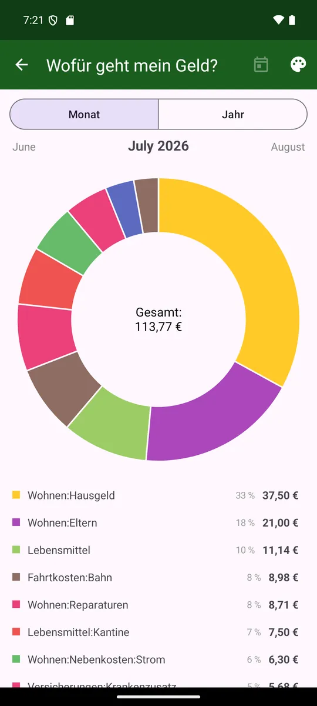
Geplante Buchungen einbeziehen (Kalender-Symbol)
Der Kalender-Schalter oben rechts rechnet die im Zeitraum fälligen geplanten Ausgaben (Kapitel 16) zu den bereits getätigten hinzu – auch die, die als Abzug in einer geplanten Einzahlung stecken, etwa die Kapitalertragssteuer einer Dividende. Dann gilt:
- Die Summe je Kategorie steigt um den geplanten Anteil; die Liste sortiert nach der neuen Summe.
- Im Diagramm erscheint der bereits gezahlte Anteil in der kräftigen Farbe der Kategorie, der geplante Anteil direkt daneben im selben, helleren Ton – beide bilden zusammen einen durchgehenden Kreisausschnitt.
- Zeilen mit geplantem Anteil lassen sich aufklappen (Pfeil rechts) und zeigen «Bereits gezahlt» und «Geplant» getrennt.
- Mit eingeschaltetem Schalter blättert der Slider auch in zukünftige Monate/Jahre, die dann nur geplante Werte zeigen – bis zum letzten geplanten Termin.
Farben festlegen (Paletten-Symbol)
Jede Kategorie hat eine feste Farbe – unabhängig davon, auf welchem Listenplatz sie gerade steht. Das Paletten-Symbol oben rechts öffnet die Farbliste: Ein Tipp auf eine Kategorie öffnet die Auswahl; «Standard» setzt die automatische Farbe wieder ein. Die Zuordnung gilt sofort im Diagramm und in der Liste.
15. Budget
Die Budget-Seite (Menü ⋮ → Budget) stellt je Kategorie das Ist dem Soll gegenüber. Sie beantwortet die Frage: «Liege ich im Plan?»
Woher kommt das Soll?
- Aus KMyMoney importieren (Knopf in den Einstellungen): enthält Ihre .kmy eine Budgetplanung, werden deren Werte als Soll übernommen – monatsgenau (monatliche bzw. monatweise Budgets werden je Monat gespeichert). Solche Soll-Werte sind nicht editierbar.
- Aus dem Verlauf berechnen: Summe aller bisherigen Jahre ÷ Anzahl der Jahre mit Daten. Automatisch, wenn der Schalter «Budget app-intern berechnen» aktiv ist, sonst per Knopf. Diese Soll-Werte lassen sich durch langen Druck auf eine Zeile ändern.
Ob eine Kategorie Einnahme oder Ausgabe ist, ergibt sich aus der .kmy-Datei. Eine Erstattung mindert daher die Ausgabekategorie, ohne sie zur Einnahme zu machen; ein rechnerisch negativer Ist wird auf 0 gesetzt.
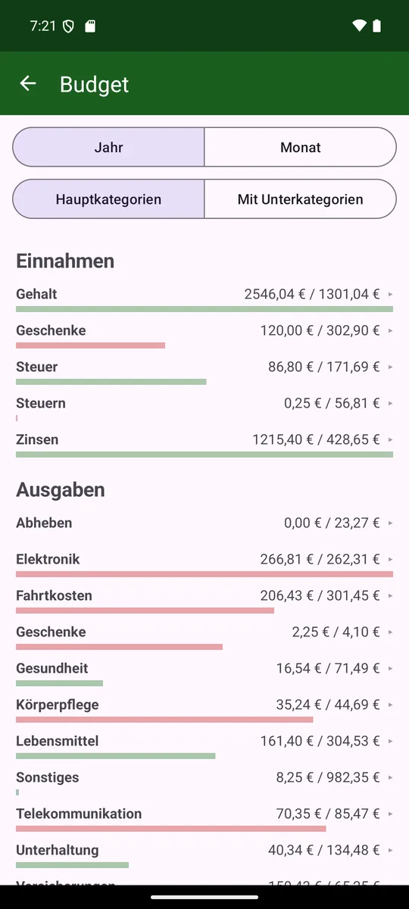
Anzeige
- Umschalter Jahr / Monat. Die Jahressicht summiert die Monate; die Monatssicht zeigt das Soll des angezeigten Monats gegen die Ist-Werte desselben Monats. In der Monatssicht blättert man per Wischgeste (oder Tippen auf den grauen Vor-/Folgemonat in der Kopfzeile) durch die Monate.
- Umschalter nur Hauptkategorien / mit Unterkategorien (Hauptkategorie = Summe über ihre Unterkategorien).
- Einnahmen zuerst, dann Ausgaben (große Überschriften); Hauptkategorien fett, Unterkategorien eingerückt. Rechts steht «Ist / Soll».
- Unter jeder Kategorie ein dünner Balken: grün, wenn man im Plan liegt, rot, wenn daneben. Die Breite zeigt den verbrauchten Anteil des Solls.
Wann der Balken grün wird
Statt eines rein linearen Zeitvergleichs lernt die App aus der Zahlungshistorie das typische Timing jeder Kategorie. Eine einmalige Ausgabe – etwa eine am Monatsanfang gekaufte Monatskarte – ist bereits grün, sobald sie im Budget liegt. Regelmäßige Ausgaben wie Lebensmittel werden weiter am Zeitanteil gemessen. Ohne Historie gilt der lineare Vergleich; bei Einnahmen umgekehrt.
16. Geplante Buchungen
Die Seite Geplante Buchungen (Menü ⋮ → Geplante Buchungen, nur im .kmy-Modus sichtbar) zeigt Ihre in KMyMoney angelegten Daueraufträge als eine chronologische Liste nach Fälligkeit. Aktualisiert wird sie nur durch die Wischgeste nach unten auf dieser Seite, nicht beim normalen Konto-Import.
- Kurzer Tipp auf eine Zeile: die Planung ansehen.
- Langer Druck: sie jetzt buchen.

Was in der Liste steht
Jede wiederkehrende Planung wird in ihre Einzeltermine aufgefaltet – ein wöchentlicher Bäcker erscheint also mehrfach, bis zu zwei Jahre im Voraus. Ein farbiger Strich zeigt die Art: grün für Einzahlung, rot für Auszahlung, gelb für Umbuchung.
Eine Planung buchen oder überspringen
Ein langer Druck auf eine Zeile öffnet den Buchungs-Editor als neue Buchung, vorbefüllt aus der Planung. Prüfen, bei Bedarf ändern, mit «Neue Buchung» speichern. Alternativ steht im Editor der Knopf «Buchung überspringen»: es entsteht keine Buchung, der Termin gilt trotzdem als erledigt.
Ob gebucht oder übersprungen – der Termin verschwindet aus der Liste, und beim nächsten Export rückt die Regel in KMyMoney zum nächsten Termin weiter.
Erinnerung an fällige Buchungen
Der Schalter «Erinnerung an fällige Buchungen» in den Einstellungen (ab Werk aus) meldet sich einmal täglich, wenn etwas fällig ist; ein Tipp auf die Meldung öffnet diese Seite.
Saldo-Streifen (durchschaltbar)
Oben zeigt ein Saldo-Streifen die Summe des aktuell gesetzten Filters. Ein Tipp schaltet zwischen Überschuss/Fehlbetrag, Einzahlungen, Rechnungen und Umbuchungen durch.
Filter
Das Filter-Symbol oben rechts grenzt Liste, Saldo-Streifen und Grafik ein – nach Buchungsart, Konto, Name/Zahlungsempfänger und Zeitraum.
Grafik
Das Grafik-Symbol oben rechts öffnet eine Auswertung wie in der Kontoansicht: Balken je Fälligkeit (grün Einzahlung, rot Rechnung) und eine Entwicklungslinie, die heute bei 0 beginnt und in die Zukunft läuft. Sie übernimmt den eingestellten Listenfilter und lässt sich wie die Konto-Grafik zoomen und verschieben.
17. Synchronisieren: Export und Import durchführen
Der eigentliche Abgleich mit KMyMoney läuft über ein einziges Symbol in der Titelleiste des Hauptbildschirms – das Export-/Sync-Symbol (Pfeil nach unten).
Buchungen exportieren
Tippen Sie auf das Export-Symbol ⬇. Die App lädt die aktuelle .kmy vom Sync-Ziel, fügt Ihre neuen Buchungen ein, legt zuvor eine Sicherung an (siehe unten) und schreibt die Datei zurück. Jede Buchung wird nur einmal exportiert und danach als «exportiert» markiert. Im CSV-Modus wird stattdessen je Konto eine CSV-Datei hochgeladen.
Bearbeitete Buchungen. Ändern Sie eine bereits exportierte Buchung, wird beim nächsten Export nicht neu angelegt, sondern die vorhandene Transaktion in der .kmy-Datei aktualisiert – ohne Dublette.
Wenn die Änderung nicht ankommt
Ist die alte Transaktion in der Datei nicht mehr zu finden – etwa am Rechner gelöscht –, bleibt die Buchung «bearbeitet»; eingefügt wird nichts.
Konten (neu) importieren
Der Import erfolgt gezielt über die Kontenschublade (langer Druck):
- Langer Druck auf ein Konto: importiert/aktualisiert genau dieses Konto.
- Langer Druck auf «Alle Konten» (oder Herunterziehen): liest alles neu ein – Konten, Depots und geplante Buchungen in einem Durchgang.
- «Konto hinzufügen»: holt ein noch nicht vorhandenes Konto aus der .kmy, mehrere auf einmal ankreuzbar.
- Langer Druck auf das Depot: aktualisiert Wertpapiere und Kurse.
Wertpapierkäufe und -verkäufe werden dabei als Umbuchung ins bzw. aus dem Wertpapier eingelesen, Dividenden bleiben normale Einnahmen.
Der Import läuft im Hintergrund – die Oberfläche bleibt bedienbar, ein gelber Banner zeigt den Fortschritt. Eine Meldung kommt nur bei einem Fehler.
Sicherung vor jedem Export
Vor jedem Rückschreiben legt die App automatisch eine zeitgestempelte Sicherung der .kmy im Unterordner «Backup» neben dem Original an – ein Fallback, falls mit der Datei einmal etwas nicht stimmt.
Schutz vor Überschreiben
Arbeitet jemand am Rechner in KMyMoney, während die App exportiert, dürfen dessen Änderungen nicht verloren gehen: Wurde die Datei zwischenzeitlich geändert, bricht der Export ab und schreibt nichts – die Buchungen bleiben unexportiert und lassen sich nach einem erneuten Import ohne Verlust nochmals exportieren.
KMyMoney am Rechner geöffnet
Den umgekehrten Fall kann die App nicht in jedem Fall verhindern: Ist die Datei in KMyMoney geöffnet, während die App exportiert, und speichert KMyMoney danach, schreibt es seinen eigenen Stand über die Datei – die gerade übertragenen Buchungen sind dann weg, und die App schickt sie nicht noch einmal. KMyMoney prüft beim Speichern nicht, ob sich die Datei inzwischen geändert hat. Schließen Sie KMyMoney deshalb vor dem Export – oder öffnen Sie die Datei danach neu, bevor Sie dort speichern.
Ab KMyMoney 5.2 erkennt die App das selbst: KMyMoney legt beim Öffnen eine Sperrdatei «Dateiname.lck» neben die Datei, und findet die App sie auf dem Server, bricht der Export ab, ohne etwas zu schreiben. Das klappt allerdings nur, wenn die Sperrdatei auch auf dem Server liegt:
- Nextcloud mit Sync-Client: nur, wenn der Client «.lck»-Dateien mit überträgt. Der Nextcloud-Client tut das in der Grundeinstellung; wer «*.lck» in seine Ausschlussliste aufgenommen hat, verliert den Schutz.
- SMB-Freigabe oder anderer WebDAV-Server: klappt, sobald KMyMoney die Datei über einen Dateipfad öffnet – also wenn der freigegebene Ordner auf demselben Rechner liegt, auf dem KMyMoney läuft, oder wenn die Freigabe als Laufwerk eingebunden ist (Netzlaufwerk unter Windows, eingehängte Freigabe unter Linux). Öffnet KMyMoney die Datei dagegen über eine Adresse wie «smb://» oder «webdavs://», arbeitet es mit einer heruntergeladenen Kopie und legt keine Sperrdatei an.
- KMyMoney vor 5.2 legt keine Sperrdatei an; dort hilft nur das Schließen.
- Meldet die App eine Sperre, obwohl KMyMoney geschlossen ist, stammt sie von einem Absturz. KMyMoney einmal öffnen und wieder schließen räumt sie weg.
18. Wear OS (Uhr)
Mit der Uhren-App erfassen Sie eine Ausgabe per Sprache direkt am Handgelenk. Die Uhr nimmt nur den Text auf; die Verarbeitung und das Anlegen der Buchung passieren auf dem Handy.
- Drei Typ-Knöpfe: Einnahme (grün), Umbuchung (gelb), Ausgabe (rot). Danach startet die Sprache.
- Stille Zifferneingabe: über das Ziffern-Symbol einen Betrag lautlos eingeben.
- Wear-Tile: Schnellzugriff als Kachel.
- Standardort-Saldo: unter den Knöpfen zeigt die App den Saldo des Standardorts.
- Offline: nicht übertragene Buchungen werden automatisch nachgereicht, sobald das Handy erreichbar ist.

Konto und Ort wechseln
Oberhalb von «Buchung erfassen» schaltet ein grauer Wechsel-Knopf das angezeigte Konto durch; die nächste Buchung betrifft dann dieses Konto. Nach kurzer Zeit springt die Auswahl von selbst auf den Standardort zurück.
Wenn statt des Saldos ein Grund dasteht
Sind noch Buchungen nicht übertragen, steht an der Stelle des Saldos der Grund dafür, z. B. «Warten auf GPS» oder «Keine Verbindung zum Handy».
Offline erfassen (Handy aus oder getrennt)
Die Spracherkennung funktioniert auch ohne Handy/Netz, sofern auf der Uhr ein Offline-Sprachmodell vorhanden ist – lädt sich per Schalter in den Einstellungen («Offline-Sprachpaket auf der Uhr installieren») einmalig herunter. Klappt die Sprache offline nicht, öffnet die Uhr automatisch den Zahlenblock: Sie tippen nur den Betrag, die Buchung wird zwischengespeichert und gesendet, sobald das Handy wieder verfügbar ist.
Voraussetzung: Handy- und Uhren-App haben dieselbe Signatur (gleicher Schlüssel).
19. Einstellungen (vollständige Referenz)
Die Einstellungen erreichen Sie über das Menü ⋮ oben rechts – Eintrag «Einstellungen» ganz unten. Beim ersten Start setzt der Willkommen-Assistent (Kapitel 3) bereits die wichtigsten Punkte; hier sind alle Felder in der Reihenfolge des Bildschirms beschrieben. Änderungen wirken mit «Speichern» (Sprache und Dunkelmodus sofort).
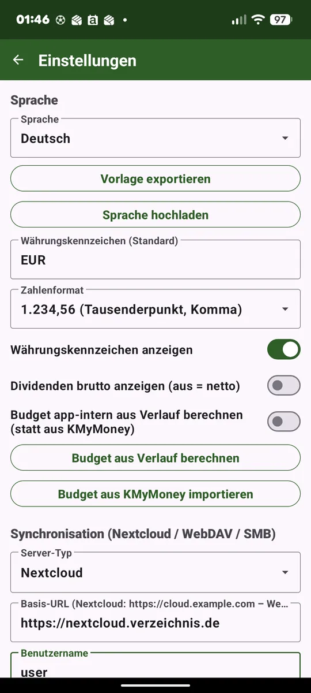


Sprache, Zahlenformat und Währung
- Sprache: Deutsch/Englisch (weitere per Sprachdatei). Beim ersten Start nach dem Handy vorbelegt; die Wahl wirkt sofort. Über «Sprachvorlage exportieren/hochladen» lässt sich eine eigene Übersetzung als Datei pflegen.
- Währung: Standard-Währungskennzeichen für Konten ohne eigene Währung (beim .kmy-Import je Konto aus der Datei übernommen).
- Zahlenformat: «1.234,56», «1,234.56» oder «1234,56»/«1234.56» ohne Tausendertrennung; dazu der Schalter «Währungskennzeichen anzeigen». Gilt für alle Beträge in App und Uhr; der Export bleibt formatstabil.
- Dividenden brutto/netto: ob Depot-Dividenden brutto (deklariert) oder netto verrechnet werden.
- Abrechnungen einlesen: erlaubt im Depot das Einlesen von PDF-Abrechnungen der Bank (Standard: aus). Beim Einschalten nennt die App, an wie vielen Banken die Erkennung gemessen wurde. Die ausführliche Dokumentation dazu steht in Kapitel 10.
- Budget app-intern: das Budget-Ist aus dem Verlauf berechnen statt aus KMyMoney importieren (siehe Kapitel 15).
- Offline-Sprachpaket auf der Uhr installieren (nur GitHub-Variante mit Wear-Anbindung): erlaubt der Uhr, das Offline-Sprachmodell der gewählten Sprache zu laden, damit die Sprachaufnahme auch offline funktioniert (siehe Kapitel 18). Aus → offline greift der Zahlenblock-Fallback.
Datumsformat: Datumsangaben in der App folgen der gewählten Sprache – auf Deutsch «TT.MM.JJJJ», auf Englisch und Spanisch die dort übliche Schreibweise. Stimmt die gewählte Sprache mit der Sprache des Geräts überein, zählt zusätzlich dessen Land: Englisch schreibt sich in den USA «MM/TT/JJJJ», in Großbritannien dagegen «TT/MM/JJJJ». Eine eigene Einstellung gibt es dafür nicht, weil das Gerät die Frage bereits beantwortet. Der CSV-Export bleibt davon unberührt und schreibt weiterhin «TT.MM.JJJJ» – er richtet sich nach der Datei, nicht nach der Anzeige.
Verbindung zu Ihrem Server (SMB / WebDAV / Nextcloud)
Der wichtigste Einrichtungsschritt, damit die App mit KMyMoney Daten austauscht. Wählen Sie den Server-Typ und tragen Sie den Zugang ein:
- Nextcloud: Basis-URL des Servers + App-Passwort (Nextcloud → Sicherheit → App-Passwort).
- WebDAV (generisch): vollständige DAV-Wurzel-URL, Auth per HTTP-Basic.
- SMB/Samba: wird per Assistent eingerichtet – siehe unten. SMB2/3.
- «Verbindung testen» prüft nicht nur die Zugangsdaten, sondern die ganze Kette bis zum Schreibrecht – siehe unten.
Belegordner: der Ordner neben der KMyMoney-Datei, in dem die Belegfotos liegen – Vorgabe «Belege»; halten mehrere Profile ihre Datei im selben Ordner, gibt man jedem einen eigenen Namen, sonst hielte jedes Profil die Belege des anderen für herrenlos.
SMB/Samba einrichten (Assistent)
Bei Server-Typ SMB/Samba erscheint statt der Adressfelder ein Assistent, damit Sie weder Rechnernamen noch Freigabenamen auswendig wissen müssen:
- Server suchen. Die App durchsucht beim Öffnen automatisch das lokale Netz. Gefundene Server erscheinen mit Anzeigename und IP-Adresse; «Erneut suchen» startet die Suche neu.
- Anmelden. Benutzername und Passwort des Servers eintragen. Das Passwort wird verschlüsselt gespeichert und nie im Klartext angezeigt.
- Freigabe wählen. Die App liest die Freigaben des Servers aus; ein Klick trägt die gewählte in das Feld «Freigabename» ein.
- Speichern. Daraus entsteht die Adresse «smb://Host/Freigabe». Den Zielordner darin wählen Sie danach mit «Ordner durchsuchen» beziehungsweise «.kmy auswählen».
Wenn der Server nicht auf Port 445 lauscht
Über den Anmeldefeldern steht das Feld «Port». Es bleibt leer, solange der Server den üblichen SMB-Port 445 benutzt. Meldet er per Bonjour einen anderen, ist der schon eingetragen; antwortet dort niemand, versucht die App zusätzlich den Standardport 445 und korrigiert die gespeicherte Adresse. Die Adresse lautet dann «smb://Host:7777/Freigabe».
Freigabe ohne Passwort
Leerer Benutzer heißt Gast. Bei einer Freigabe ohne Passwort lassen Sie das Passwortfeld einfach leer – die App arbeitet dann als Gast weiter, auch wenn ein Benutzername eingetragen ist.
Weitere Feinheiten
Gesucht wird auf drei Wegen zugleich: Bonjour/mDNS, eine NetBIOS-Namensabfrage und ein Verbindungstest auf dem SMB-Port. Zuletzt gefundene Server werden gemerkt und beim nächsten Öffnen sofort angezeigt.
Gehört der Server einer anderen Arbeitsgruppe als «WORKGROUP» an, ist das Feld bereits vorbelegt – die Suche nennt sie unter dem Servernamen, sofern der Server sie herausgibt. Gibt er auch die Liste der Freigaben nicht heraus, tippen Sie den Freigabenamen von Hand ein; System-Freigaben wie IPC$ blendet die App ohnehin aus.
«Server manuell eingeben» blendet die klassischen Felder ein, in die Sie die Adresse selbst tippen. Über «Server im Netzwerk suchen» kommen Sie jederzeit zum Assistenten zurück.
Arbeitsgruppe oder Windows-Domäne: Im Heimnetz heißt die Arbeitsgruppe meist «WORKGROUP» – sie spielt für die Anmeldung keine Rolle, Samba-Server und NAS prüfen nur Benutzer und Passwort. Anders ist es in einer echten Windows-Domäne (Active Directory): dort tragen Sie den Benutzer als DOMÄNE\Benutzer ein (alternativ «benutzer@domäne.local»). Fehlt die Domäne, kann die Anmeldung mit «Benutzername oder Passwort sind ungültig» scheitern, obwohl das Passwort stimmt. Bei einem Windows-PC mit lokalem Konto gilt notfalls «RECHNERNAME\Benutzer».
Schlägt etwas fehl, nennt der Assistent den Grund konkret: «Server nicht erreichbar», «Benutzername oder Passwort sind ungültig», «Die ausgewählte Freigabe ist nicht verfügbar» oder «Zugriff auf den Ordner wurde verweigert» – dazu in Klammern der rohe Statuscode des Servers, damit eine Rückmeldung zuzuordnen ist. «Server nicht erreichbar» erscheint nur, solange wirklich noch keine Verbindung stand. Steht im Portfeld keine Zahl zwischen 1 und 65535, meldet er das sofort, ohne einen Verbindungsversuch.
Verbindung testen
Der Knopf «Verbindung testen» – in den Einstellungen und im Erststart-Assistenten, für alle Server-Typen – prüft weit mehr als die Zugangsdaten. Er geht die ganze Kette durch, bis hin zu der Frage, die am Ende zählt: Darf die App in diesen Ordner schreiben, umbenennen und löschen?
Was Sie während der Prüfung sehen
Eine Prüfung dauert einige Sekunden, und hakt es wirklich, wartet jeder einzelne Schritt erst seine Zeit ab. Deshalb erscheint unter dem Knopf ein gelbes Band: links steht der zuletzt abgeschlossene Schritt mit grünem Haken oder rotem Kreuz, rechts der gerade laufende. So ist jederzeit zu sehen, wie weit es gekommen ist und woran gerade gearbeitet wird – statt einer Maske, die stillsteht.
Wenn alles klappt
Dann genügt ein Satz: «Verbindung erfolgreich». Wer es genau wissen will, öffnet mit «Bericht anzeigen» trotzdem die vollständige Liste.
Wenn etwas hakt
Dann steht der Bericht sofort da: je Schritt, ob er geklappt hat, wie lange er gedauert hat und im Fehlerfall der rohe Statuscode – und dazu, soweit möglich, was er bedeutet. Ein «HTTP 401» etwa nennt den häufigsten Grund gleich mit: Bei eingeschalteter Zwei-Faktor-Anmeldung gehört hier ein App-Passwort hin, nicht das Kontopasswort.
«Bericht kopieren» legt das Ergebnis in die Zwischenablage – gedacht zum Weiterschicken bei einer Fehlermeldung. Der Bericht enthält weder Passwort noch Benutzernamen: der Benutzer erscheint nur als «gesetzt» oder «leer», in der Nextcloud-Adresse als «<Benutzer>». Server, Port und Pfadaufbau stehen im Klartext darin – ohne sie könnte Ihnen aus der Ferne niemand helfen.
Die Schritte bei SMB/Samba
Die ganze Kette läuft in einer Anmeldung – so, wie es auch der Normalbetrieb tut:
- Verbinden (mit Hinweis, falls über den Standardport statt des eingetragenen),
- Aushandeln: welcher SMB-Dialekt, ob der Server Signierung verlangt und ob Verschlüsselung ausgehandelt wurde,
- Anmelden: als Benutzer oder als Gast, verschlüsselt oder nicht,
- Freigaben lesen, Freigabe öffnen, Ordner lesen,
- Schreiben, Umbenennen und Aufräumen im Ordner – mit einer winzigen Testdatei, die sofort wieder verschwindet,
- Datei prüfen und, wenn sie existiert, ob sie beschreibbar ist (nur .kmy-Modus).
Die Schritte bei Nextcloud und WebDAV
- Adresse: wie die App die Server-Adresse versteht. Hier fällt auch der häufigste Tippfehler auf – wenn bei Server-Typ «Nextcloud» der Pfad «/remote.php/dav/…» schon in der Basis-URL steht, stünde er hinterher doppelt da.
- Erreichbarkeit: ob dort überhaupt jemand antwortet und ob er WebDAV spricht. Trägt man versehentlich die Adresse der Weboberfläche ein, steht es hier.
- Umleitung: wohin der Server weiterleitet, falls er das tut (etwa von «http» auf «https»).
- Anmelden: Benutzer und Passwort. Ein abgewiesener Zugang wird nach Grund unterschieden – falsche Zugangsdaten, ein vorgeschalteter Schutz oder eine falsche Adresse sind verschiedene Dinge.
- Ordner lesen, dann Schreiben, Umbenennen und Aufräumen darin,
- Datei prüfen samt Größe und die Versionskennung (ETag) – liefert der Server keine, kann die App beim Rückschreiben nicht erkennen, ob jemand anders die Datei zwischenzeitlich geändert hat (nur .kmy-Modus).
Warum Umbenennen und Löschen dazugehören
Beim Übertragen schreibt die App Ihre KMyMoney-Datei erst vollständig unter einem Zwischennamen und läßt sie dann einhängen – nur so kann ein Abbruch (Funkloch, Zeitüberschreitung) Ihre Datei nicht halb überschreiben und unlesbar zurücklassen. Dafür braucht der Ordner alle drei Rechte. Ein Ordner, in dem zwar Anlegen und Löschen geht, das Umbenennen aber nicht, fiele sonst erst beim ersten echten Übertragen auf – also nachdem Sie schon gebucht haben.
Export-Modus
- .kmy-Modus: schreibt neue Buchungen direkt in die KMyMoney-Datei (inkl. Splits und Umbuchungen) und importiert Konten/Buchungen sowie das Depot daraus. Über «.kmy auswählen» öffnet sich ein Datei-Browser (Unterordner, «..» zurück).
- CSV-Modus: exportiert je Konto eine CSV-Datei (jede Buchung nur einmal); Zielordner und Import-Ordner werden hier gesetzt.
Ohne konfiguriertes Sync-Ziel wird lokal in einen selbst gewählten Ordner exportiert. Wie der Abgleich abläuft, steht in Kapitel 17.
Standardkonto und Orte
- Standardkonto: Vorauswahl für neue Buchungen (auch für Widget und Uhr). Erst wählbar, wenn Konten vorhanden sind.
- Orte je Konto: pro Konto lassen sich Bargeld-Orte anlegen und ein Standardort festlegen (siehe Kapitel 8).
Alias-Namen
Der Schalter «Nachfrage» steuert, ob die App nach dem Sprechen einen unbekannten Empfänger als Alias lernen möchte (bestehende Aliase gelten weiter). Über «Alias-Namen verwalten» legen Sie Aliase manuell an, ändern und löschen sie – mit gesprochenem Begriff, echtem Empfänger, Buchungsart, Konto, Kategorien und Standort (per «Karte öffnen» auf einer OpenStreetMap-Karte). Der Schalter «bevorzugen» (★) stellt einen Alias vor die Buchungssuche; derselbe Begriff darf auf mehrere per Standort unterschiedene Empfänger zeigen.
Darstellung
- Dunkelmodus: Hell/Dunkel (wirkt sofort).
- Erinnerung an geplante Buchungen: erinnert einmal täglich an heute fällige geplante Buchungen (standardmäßig aus; siehe Kapitel 16).
Sicherheit & Datenschutz
- App-Sperre: optional per Fingerabdruck, Gesicht, PIN, Muster oder Passwort – beim Start und bei Rückkehr aus dem Hintergrund. Startet die App selbst eine fremde App – Kamera, Galerie, Dateiauswahl, Spracheingabe –, fragt sie beim Zurückkommen innerhalb von fünf Minuten nicht erneut nach. Wer länger wegbleibt, muss sich wieder ausweisen.
- Standort (GPS): standardmäßig aus. Aus = keine Berechtigungsabfrage, keine GPS-Notiz, keine Betrag-only-Erfassung, kein Alias-Standort. Die Position wird nur lokal genutzt, nie an einen Dienst gesendet.
- Betrag in den Vorschlägen berücksichtigen: standardmäßig aus. Ein = der Betrag entscheidet mit, wo mehrere Empfänger am selben Ort stehen – in der Zifferneingabe wechselt der angezeigte Name mit dem Betrag, und im Buchungseditor wird ein eindeutiger Empfänger vorbelegt. Aus = beides bleibt ruhig; in der Zifferneingabe steht der nächstgelegene Empfänger, den Sie durch Antippen wechseln. Unabhängig davon nutzt die reine Spracheingabe ohne Empfänger – am Handy wie von der Uhr – den Betrag immer, denn dort gibt es nichts zu wählen.
Daten
- Alles exportieren sowie Sicherung erstellen/einspielen (siehe unten).
- Konten verwalten (löschen/schließen): Eine Mehrfachauswahl listet alle Konten mit Status (Aktiv/Geschlossen). Unten stehen (kontextabhängig) Schließen/Öffnen und rechts Löschen; Schließen nur bei Saldo 0, Öffnen nur bei geschlossenen Konten. Ein geschlossenes Konto erscheint nirgends mehr – nur in der Auswertung-Gesamtsicht zählt sein historischer Saldo weiter.
- Daten zurücksetzen: löscht die lokale Datenbank (Neustart wie beim ersten Mal – danach erscheint wieder der Willkommen-Assistent).
Sicherung erstellen und einspielen
«Sicherung erstellen» schreibt Daten und Einstellungen in eine ZIP-Datei: die Datenbank (Buchungen, Konten, Orte-Journal, Depot, Planungen) und sämtliche Einstellungen – darunter die Orte je Konto, die Kategoriefarben und der Serverzugang. Vorher fragt die App zweierlei:
- Server-Passwort mitsichern? Standardmäßig nein – dann steht das Passwort in keiner Form in der Datei und wird nach dem Einspielen einmal neu eingetragen.
- Sicherungspasswort (freiwillig, zweimal einzugeben): Damit wird die ganze Datei verschlüsselt (AES-256-GCM, Dateiendung .abk statt .zip). Ohne Passwort bleibt es ein normales ZIP.
Beim «Sicherung einspielen» fragt die App zuerst – falls nötig – das Sicherungspasswort ab und dann, was zurückkommen soll: nur Daten, nur Einstellungen oder beides. So lässt sich z. B. eine kaputte Konfiguration reparieren, ohne die erfassten Buchungen anzufassen. Danach startet die App neu. Belegfotos sind nicht Teil der Sicherung – sie liegen nach dem Hochladen auf dem Server.
Beim Gerätewechsel ist diese Sicherung der einzige Weg. Android nimmt die Daten dieser App nicht in seine eigene Sicherung auf – weder in die Cloud noch beim Übertragen auf ein neues Gerät. Das ist Absicht: Buchungen, Belege und der Serverzugang sollen dieses Gerät nur dorthin verlassen, wohin Sie sie selbst schicken. Legen Sie also vor dem Wechsel eine Sicherung an und spielen Sie sie auf dem neuen Gerät ein.
20. CSV-Format (Export)
Deutsch: Spaltentrenner «;», Dezimaltrennzeichen «,», Datum TT.MM.JJJJ, UTF-8. Splitbuchungen werden je Kategorie als eigene Zeile geschrieben.
Datum;Empfänger;Konto;Typ;Betrag;Notiz;Kategorie 29.06.2026;Metzgerei;Bargeld;Ausgabe;-7,30;Mittagessen;Lebensmittel
21. Haftungsausschluss
Diese App wird ohne Gewähr bereitgestellt. Insbesondere gibt es keine Garantie, dass die .kmy-Datei nach einem Export vollständig gültig bleibt. Dank der automatischen Sicherung vor jedem Export haben Sie jedoch stets einen Fallback. Bewahren Sie zusätzlich eigene, regelmäßige Backups auf.